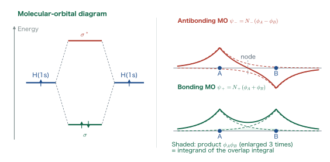
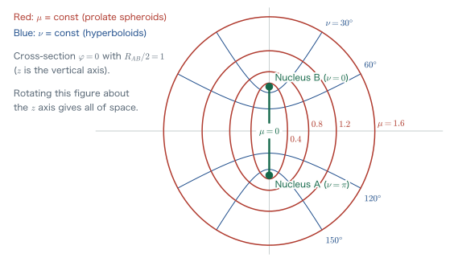
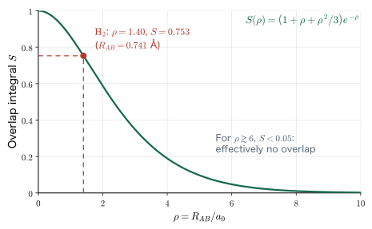
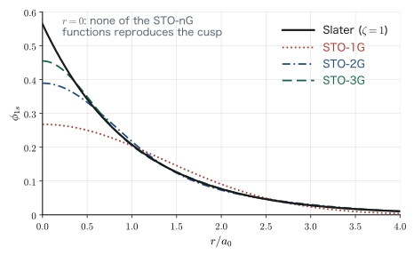
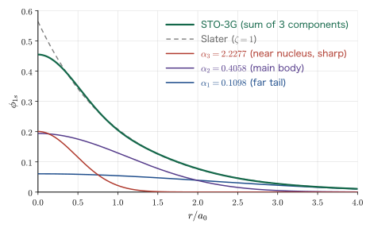
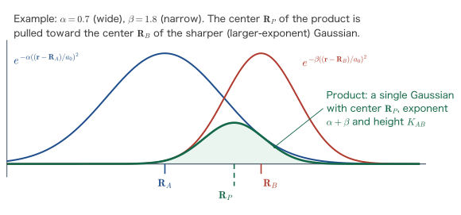
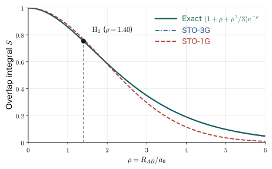

Chapter 5Overlap Integrals and Basis Functions — Deriving STO-3G
With the variational principle of Chapter 3 and the perturbation theory of Chapter 4, we now have two tools for finding “a plausible solution of a system that cannot be solved exactly.” To actually put the variational principle to work, however, we must first write down a trial function explicitly. Where, then, should that trial function come from? The straightforward answer is “combine the exact solutions of the hydrogen atom,” and indeed the bonding and antibonding orbitals of the hydrogen molecule that we saw in Chapter 1 were simply the sum and difference of atomic orbitals, $\phi_A \pm \phi_B$. This straightforward strategy, however, has a fatal weakness: as soon as there are two or more atoms, the integrals become hellishly difficult. In this chapter we first get a feel for the nature of that difficulty by carrying the simplest two-center integral, the overlap integral, all the way through with pencil and paper. The first half covers everything from introducing an unfamiliar coordinate system, elliptical coordinates (prolate spheroidal coordinates), to obtaining $S=(1+\rho+\rho^2/3)e^{-\rho}$. In the second half we introduce the Gaussian-type basis functions that were proposed to get around this difficulty, and follow, coefficient by coefficient, what kind of optimization produced the numbers of STO-3G, the basis that is still the first choice in quantum-chemical calculations all over the world. Finally, we prove the theorem that “the product of two Gaussian functions is again a Gaussian function,” and confirm that the same overlap integral is finished in a few lines. This contrast is exactly the reason modern quantum-chemical calculations run on Gaussian basis sets.
- The definition of the overlap integral $S=\int \phi_A^*(\bm{r})\phi_B(\bm{r})\,\dd^3r$, and the fact that it appears directly in the normalization of the bonding and antibonding orbitals
- The definition, domain and Jacobian of the elliptical coordinates, which are powerful for two-center problems
- A complete hand calculation of the overlap integral of hydrogen 1s orbitals, $S(\rho)=\left(1+\rho+\rho^2/3\right)e^{-\rho}$ with $\rho=R_{AB}/a_0$
- The numerical behavior of $S(\rho)$, and the fact that, for H$_2$ at the equilibrium internuclear distance $1.40\,a_0$, $S=0.753$
- The Gaussian integral $\int_{-\infty}^{\infty}e^{-ax^2}\dd x=\sqrt{\pi/a}$, and the derivation of the normalization constant $(2\alpha/\pi)^{3/4}$ of the three-dimensional Gaussian-type orbital
- The advantages and disadvantages of Slater-type orbitals (STOs) and Gaussian-type orbitals (GTOs), and how the exponent $\alpha=0.27095$ of STO-1G is determined
- The coefficients and exponents of STO-2G and STO-3G, and “why the exponents are spread over orders of magnitude”
- A complete completion of the square for the Gaussian product theorem, and the resulting overlap integral $S=\left[\dfrac{4\alpha\beta}{(\alpha+\beta)^2}\right]^{3/4}e^{-\frac{\alpha\beta}{\alpha+\beta}\rho^2}$
5.1 When There Are Two Hydrogen Atoms — What Is the Overlap Integral?
5.1.1 The figure from Chapter 1 once more
In Chapter 1 we saw a figure showing that when two hydrogen atoms approach each other, the two 1s orbitals give rise to a bonding orbital and an antibonding orbital. Writing the 1s orbital of atom A as $\phi_A$ and that of atom B as $\phi_B$, these two molecular orbitals are given by
$$ \begin{equation} \psi_{\pm}(\bm{r}) = N_{\pm}\bigl[\phi_A(\bm{r}) \pm \phi_B(\bm{r})\bigr] \label{eq:5-lcao} \end{equation} $$that is, as a simple sum and difference of atomic orbitals. This is the idea of the linear combination of atomic orbitals (LCAO), the protagonist that runs through this book up to the secular equation of Chapter 11. Here $N_{\pm}$ are normalization constants, but the moment we try to determine them, the quantity that is the subject of this chapter shows up.

See It Live: The molecular orbital diagram of H$_2$ computed by CrystOD
The left panel of Figure 5.1 is a schematic diagram that shows only the relative positions of the levels. When we have CrystOD actually compute the same thing, we obtain the following (internuclear distance $R_{AB}=0.741\ \text{Å}$, the Hartree–Fock method (Chapter 9), and the STO-3G basis functions that we construct in Section 5.7). The figure below is interactive, so please place the cursor on a level and check the numerical values.
$ crystod-mol --diagram --xyz XYZ_H2.xyz --pyscf --basis sto-3g --ao-left H --ao-right H
We would like you to compare the following two points. First, the skeleton of the diagram is the same as that of Figure 5.1. From the levels of the left and right hydrogen atoms ($-12.82$ eV), one bonding orbital $1\sigma_g$ ($-15.73$ eV) and one antibonding orbital $1\sigma_u$ ($+18.23$ eV) are formed, and the two electrons both occupy $1\sigma_g$. $1\sigma_g$ and $1\sigma_u$ correspond to $\sigma$ and $\sigma^*$ in Figure 5.1 (the meaning of the subscripts g and u is discussed in Chapter 12). Second, the splitting above and below is not symmetric. The bonding orbital is lowered by only about $2.9$ eV, whereas the antibonding orbital is raised by about $31$ eV. In Figure 5.1 we drew the upward and downward shifts with the same width, but in reality the antibonding orbital is pushed up much more. One cause of this asymmetry is that the overlap integral $S$ calculated in this chapter is not zero, and we will derive this in Chapter 11 in the form $\varepsilon_{\pm}=(\alpha\pm\beta)/(1\pm S)$.
Two remarks on the numbers. The atomic level $-12.82$ eV is slightly lower than the STO-3G value $-12.696$ eV of an isolated hydrogen atom that we obtain in Section 5.7 (Table 5.5), because CrystOD computes the atomic level with the same basis functions as the molecule (including the functions placed at the position of the partner atom). Also, the orbital energies here are values from a Hartree–Fock calculation that includes the repulsion between electrons, so they do not coincide exactly with the values obtained by inserting $\alpha$, $\beta$ and $S$ into the simple formula of Chapter 11.
5.1.2 Definition of the overlap integral
Let us find the normalization constant in Eq. \eqref{eq:5-lcao}. Suppose that $\phi_A$ and $\phi_B$ are each normalized ($\int|\phi_A|^2\dd^3r=\int|\phi_B|^2\dd^3r=1$). Then
$$ \begin{align} \int \abs{\psi_\pm}^2 \dd^3r &= N_\pm^2\int \bigl(\phi_A^* \pm \phi_B^*\bigr)\bigl(\phi_A \pm \phi_B\bigr)\dd^3r \notag\\ &= N_\pm^2\left[\int\abs{\phi_A}^2\dd^3r + \int\abs{\phi_B}^2\dd^3r \pm \int\phi_A^*\phi_B\,\dd^3r \pm \int\phi_B^*\phi_A\,\dd^3r\right] \notag\\ &= N_\pm^2\bigl[1 + 1 \pm 2S\bigr] = 2N_\pm^2(1\pm S) \label{eq:5-norm-lcao} \end{align} $$(since 1s orbitals are real functions, $\int\phi_A^*\phi_B\dd^3r=\int\phi_B^*\phi_A\dd^3r=S$). That is, $N_\pm = 1/\sqrt{2(1\pm S)}$, and the $S$ that has appeared here is the protagonist of this chapter.
Definition: Overlap integral
We define the overlap integral $S$ of the one-electron wave function $\phi_A(\bm{r})$ belonging to atom A and the one-electron wave function $\phi_B(\bm{r})$ belonging to atom B by
$$ \begin{equation} S \;=\; \int \phi_A^*(\bm{r})\,\phi_B(\bm{r})\,\dd^3 r \;=\; \iiint \phi_A^*\,\phi_B\;\dd x\,\dd y\,\dd z \label{eq:5-overlap-def} \end{equation} $$In Dirac notation we write $S=\braket{\phi_A|\phi_B}$. $S$ is a dimensionless quantity ($\phi$ has the dimension $[\text{length}]^{-3/2}$ and $\dd^3r$ has $[\text{length}]^{3}$, so they cancel).
From the definition, the following two limits can be read off immediately.
- When the two atoms overlap completely ($R_{AB}\to 0$, $\phi_B\to\phi_A$), $S=\int|\phi_A|^2\dd^3r = 1$. This is nothing but the normalization condition of $\phi_A$ itself.
- When the two atoms are infinitely far apart ($R_{AB}\to\infty$), $\phi_B$ is zero in the region where $\phi_A$ takes finite values, so $S\to 0$.
Therefore, for hydrogen 1s orbitals we have $0 \le S \le 1$, and $S$ serves as an index that expresses, as a number from $0$ to $1$, “how much the two atomic orbitals occupy the same place.” Looking at Eq. \eqref{eq:5-norm-lcao}, we can also anticipate that the larger $S$ is, the more asymmetric the energy difference between the bonding and antibonding orbitals becomes (the details are treated in the secular equation of Chapter 11).
Why? Why does “overlap” determine the strength of a bond?
In the bonding orbital $\psi_+$, $\phi_A$ and $\phi_B$ add with the same sign in the internuclear region, so the electron density $|\psi_+|^2$ increases between the nuclei. An arrangement in which negative charge is sandwiched between two positive charges is electrostatically favorable, and this produces the stabilization of the energy. The amount of this “extra electron density piled up between the nuclei” is proportional to the integral of the cross term $2\phi_A\phi_B$, that is, to $S$. Conversely, if $S$ is almost zero, the two atomic orbitals behave as if they were ignoring each other, and no bond can form. This is why, when we discuss the strength of a bond, we look first at $S$.
Math Note: Differences in notation from the lecture slides
In the lecture slides the overlap integral was written with a capital $\psi$, as $S=\iiint\psi_A^*\psi_B\,\dd x\dd y\dd z$. In this book, according to the notational convention we adopted, one-electron wave functions (atomic orbitals) are written $\phi$ and many-electron wave functions $\psi$ (because we will need to distinguish the two clearly in the Slater determinant of Chapter 7). Also, the internuclear distance is $r_{AB}$ in the slides, but in this book we write $R_{AB}=|\bm{R}_B-\bm{R}_A|$ to match the convention of denoting nuclear coordinates by $\bm{R}_I$. The Bohr radius is unified to $a_0$.
5.1.3 “Few textbooks show a worked hand calculation”
The defining equation \eqref{eq:5-overlap-def} of the overlap integral appears without fail in every textbook of quantum chemistry. Yet surprisingly few textbooks actually show it calculated by hand to the end. Many books write a single line, “$S$ is evaluated numerically,” and move on. But $S$ is among the easiest of the two-center integrals, and unless we can carry it through on our own, the Coulomb integral $U$, the exchange integral $J$ and the resonance integral $\beta$ that appear later (Chapters 9 and 11) will all become black boxes.
So in this chapter, even if it looks like a detour, we will calculate the overlap integral of hydrogen 1s orbitals to the end without skipping a single intermediate step. The only tool we use is the elliptical coordinates of the next section.
Example 5.1: Normalization constants of the bonding and antibonding orbitals
At the equilibrium internuclear distance of the hydrogen molecule, $S=0.753$. Find the normalization constants $N_+$ and $N_-$ of $\psi_\pm=N_\pm(\phi_A\pm\phi_B)$, and compare them with the case $S=0$.
Solution. By Eq. \eqref{eq:5-norm-lcao}, $N_\pm = 1/\sqrt{2(1\pm S)}$. Substituting $S=0.753$ gives
$$ N_+ = \frac{1}{\sqrt{2(1+0.753)}} = \frac{1}{\sqrt{3.506}} = 0.534,\qquad N_- = \frac{1}{\sqrt{2(1-0.753)}} = \frac{1}{\sqrt{0.494}} = 1.423 . $$If $S=0$, both are $1/\sqrt{2}=0.707$. When $S$ is nonzero, the coefficient of the bonding orbital becomes smaller ($0.534$) and that of the antibonding orbital becomes larger ($1.423$). These numbers reflect the fact that the antibonding orbital has a node between the nuclei and therefore cannot be normalized unless its amplitude is made larger. This asymmetry is the starting point of the important conclusion of Chapters 1 and 11 that “the destabilization of the antibonding orbital is larger than the stabilization of the bonding orbital.”
5.2 Introducing Elliptical Coordinates
5.2.1 Why spherical coordinates will not do
Calculations for a one-atom system (the hydrogen atom) were easy because spherical coordinates $(r,\theta,\varphi)$ fit a spherically symmetric potential perfectly. Once there are two atoms, however, there is no good choice of origin, as in Figure 5.2. If we place the origin at nucleus A, then $r_A=r$ is neat, but the distance to the other nucleus is
$$ r_B = \sqrt{r^2 + R_{AB}^2 - 2rR_{AB}\cos\theta} $$which has the form of the law of cosines, and this appears in the exponent of $e^{-r_B/a_0}$. Integrating a function with a square root in the exponent of an exponential function over $r$ and $\theta$ is, at least by elementary means, impossible.
Why? What happens when we change the coordinate system?
An integral is hard in many cases not because “the function is hard” but because “the coordinate system does not match the form of the function.” Spherical coordinates for a spherically symmetric function, Cartesian coordinates for a rectangular box, and so on: if we choose the coordinates so that the coordinate surfaces coincide with the isosurfaces of the integrand, the variables separate and the integral becomes much easier all at once. Here the integrand is $\phi_A\phi_B\propto e^{-(r_A+r_B)/a_0}$, and its isosurfaces are “surfaces on which the sum of the distances from two fixed points is constant”—that is, prolate spheroids with the two nuclei as foci. We should therefore use a coordinate system whose coordinate surfaces are those spheroidal surfaces. That is the elliptical coordinate system. As an idea, that is all there is to it.
5.2.2 Definition of elliptical coordinates
Definition: Elliptical coordinates (prolate spheroidal coordinates)
Take the midpoint of the line segment joining nucleus A and nucleus B as the origin, and take its direction as the $z$ axis. Letting $R_{AB}$ be the internuclear distance, we express the Cartesian coordinates as
$$ \begin{align} x &= \frac{R_{AB}}{2}\,\sinh\mu\,\sin\nu\,\cos\varphi, \notag\\ y &= \frac{R_{AB}}{2}\,\sinh\mu\,\sin\nu\,\sin\varphi, \label{eq:5-ellip-def}\\ z &= \frac{R_{AB}}{2}\,\cosh\mu\,\cos\nu \notag \end{align} $$Conversely, in terms of the distances $r_A$ and $r_B$ from the electron to the two nuclei, we have
$$ \begin{equation} \cosh\mu = \frac{r_A + r_B}{R_{AB}},\qquad \cos\nu = \frac{r_A - r_B}{R_{AB}} \label{eq:5-ellip-inv} \end{equation} $$The domains of the variables are
$$ \begin{equation} 0 \le \mu \lt \infty,\qquad 0 \le \nu \le \pi,\qquad 0 \le \varphi \le 2\pi \label{eq:5-ellip-domain} \end{equation} $$Here $\varphi$ is the same azimuthal angle as in spherical coordinates.
Solving Eq. \eqref{eq:5-ellip-inv} for $r_A$ and $r_B$ gives the relations that we will use many times later,
$$ \begin{equation} r_A = \frac{R_{AB}}{2}\bigl(\cosh\mu + \cos\nu\bigr),\qquad r_B = \frac{R_{AB}}{2}\bigl(\cosh\mu - \cos\nu\bigr) \label{eq:5-rarb} \end{equation} $$(one only adds or subtracts the two equations). Here we emphasize the fact on which the calculations in this chapter critically depend.
Only $r_A+r_B$ appears in the exponent of the integrand. It has become a function of $\mu$ alone—at this single point, both the square root and the law of cosines disappear. This is the whole reason for using elliptical coordinates.
Physical Meaning: What do $\mu$ and $\nu$ represent?
From Eq. \eqref{eq:5-ellip-def}, the surface $\mu=\text{constant}$ satisfies $\dfrac{z^2}{(a\cosh\mu)^2}+\dfrac{x^2+y^2}{(a\sinh\mu)^2}=1$ ($a\equiv R_{AB}/2$) and is a prolate spheroid (we use $\cosh^2\mu-\sinh^2\mu=1$). The foci are at $z=\pm a$, that is, at the positions of the two nuclei. For $\mu=0$ the spheroid collapses onto the line segment joining the two nuclei, and as $\mu\to\infty$ it approaches a sphere. The variable $\mu$ is a radial-type variable that expresses “how far we are from the nuclei.”
On the other hand, the surface $\nu=\text{constant}$ is a hyperboloid of revolution given by $\dfrac{z^2}{(a\cos\nu)^2}-\dfrac{x^2+y^2}{(a\sin\nu)^2}=1$; $\nu=0$ is the half-line extending upward from nucleus B, $\nu=\pi/2$ is the plane $z=0$ (the perpendicular bisector plane of the two nuclei), and $\nu=\pi$ is the half-line extending downward from nucleus A. The variable $\nu$ is an angular-type variable that expresses “whether we are closer to A or to B.” The ellipses and hyperbolas intersect orthogonally everywhere (a confocal orthogonal coordinate system), which is the same situation as in spherical coordinates, where a sphere of constant $r$ and a cone of constant $\theta$ are orthogonal.

Example 5.2: Substituting values into elliptical coordinates
Let $R_{AB}=2$ (so that $R_{AB}/2=1$, nucleus B is at $z=+1$, and nucleus A is at $z=-1$). For the point with $\mu=0.8$, $\nu=60^\circ$, $\varphi=0$, find the Cartesian coordinates, compute $r_A$ and $r_B$ from them, and verify that Eq. \eqref{eq:5-ellip-inv} actually holds.
Solution. First, $\sinh 0.8 = 0.8881$, $\cosh 0.8 = 1.3374$, $\sin 60^\circ=0.8660$, and $\cos 60^\circ = 0.5000$. Substituting into Eq. \eqref{eq:5-ellip-def} gives
$$ x = 1\times 0.8881\times 0.8660\times 1 = 0.7691,\qquad y = 0,\qquad z = 1\times 1.3374 \times 0.5000 = 0.6687 . $$Since nucleus B is at $(0,0,+1)$ and nucleus A is at $(0,0,-1)$,
$$ \begin{align} r_B &= \sqrt{0.7691^2 + (0.6687-1)^2} = \sqrt{0.5915+0.1097} = \sqrt{0.7012} = 0.8374, \notag\\ r_A &= \sqrt{0.7691^2 + (0.6687+1)^2} = \sqrt{0.5915+2.7846} = \sqrt{3.3761} = 1.8374 . \notag \end{align} $$Therefore
$$ \frac{r_A+r_B}{R_{AB}} = \frac{2.6748}{2} = 1.3374 = \cosh 0.8,\qquad \frac{r_A-r_B}{R_{AB}} = \frac{1.0000}{2} = 0.5000 = \cos 60^\circ $$and Eq. \eqref{eq:5-ellip-inv} indeed holds. This coordinate system conjures up no picture at all if one merely stares at the equations, so we strongly recommend that you substitute numbers for even a single point yourself in this way.
5.2.3 The Jacobian
When we change variables, we must rewrite the volume element. As learned in calculus, using the Jacobian $J$ of the transformation from $(\mu,\nu,\varphi)$ to $(x,y,z)$, we have $\dd x\,\dd y\,\dd z = |J|\,\dd\mu\,\dd\nu\,\dd\varphi$.
Derivation: Finding the Jacobian of elliptical coordinates
We abbreviate $a\equiv R_{AB}/2$. Listing the partial derivatives of Eq. \eqref{eq:5-ellip-def}, we have
$$ \begin{array}{lll} \dfrac{\partial x}{\partial \mu}= a\cosh\mu\sin\nu\cos\varphi, & \dfrac{\partial x}{\partial \nu}= a\sinh\mu\cos\nu\cos\varphi, & \dfrac{\partial x}{\partial \varphi}= -a\sinh\mu\sin\nu\sin\varphi, \\[6pt] \dfrac{\partial y}{\partial \mu}= a\cosh\mu\sin\nu\sin\varphi, & \dfrac{\partial y}{\partial \nu}= a\sinh\mu\cos\nu\sin\varphi, & \dfrac{\partial y}{\partial \varphi}= a\sinh\mu\sin\nu\cos\varphi, \\[6pt] \dfrac{\partial z}{\partial \mu}= a\sinh\mu\cos\nu, & \dfrac{\partial z}{\partial \nu}= -a\cosh\mu\sin\nu, & \dfrac{\partial z}{\partial \varphi}= 0 \end{array} $$We expand the $3\times3$ determinant along the third row (since $\partial z/\partial\varphi=0$, only two terms remain).
$$ \begin{align} J &= a^3\Bigl[ \sinh\mu\cos\nu\bigl(\sinh\mu\cos\nu\cos\varphi\cdot\sinh\mu\sin\nu\cos\varphi + \sinh\mu\sin\nu\sin\varphi\cdot\sinh\mu\cos\nu\sin\varphi\bigr) \notag\\ &\qquad\quad + \cosh\mu\sin\nu\bigl(\cosh\mu\sin\nu\cos\varphi\cdot\sinh\mu\sin\nu\cos\varphi + \sinh\mu\sin\nu\sin\varphi\cdot\cosh\mu\sin\nu\sin\varphi\bigr)\Bigr] \notag \end{align} $$Using $\cos^2\varphi+\sin^2\varphi=1$, the contents of the parentheses collapse neatly, and
$$ \begin{align} J &= a^3\Bigl[\sinh\mu\cos\nu\cdot\sinh^2\mu\sin\nu\cos\nu + \cosh\mu\sin\nu\cdot\cosh\mu\sinh\mu\sin^2\nu\Bigr] \notag\\ &= a^3\sinh\mu\,\sin\nu\Bigl[\sinh^2\mu\cos^2\nu + \cosh^2\mu\sin^2\nu\Bigr] . \notag \end{align} $$Now we simplify the last square bracket. Substituting $\cos^2\nu=1-\sin^2\nu$ and $\cosh^2\mu=1+\sinh^2\mu$, we get
$$ \sinh^2\mu(1-\sin^2\nu) + (1+\sinh^2\mu)\sin^2\nu = \sinh^2\mu - \sinh^2\mu\sin^2\nu + \sin^2\nu + \sinh^2\mu\sin^2\nu = \sinh^2\mu + \sin^2\nu $$so all the extra terms cancel. From the above,
$$ \begin{equation} J = \left(\frac{R_{AB}}{2}\right)^{3}\sinh\mu\,\sin\nu\,\bigl(\sinh^2\mu + \sin^2\nu\bigr) \label{eq:5-jacobian} \end{equation} $$follows. On the domain \eqref{eq:5-ellip-domain} we have $\sinh\mu\ge0$ and $\sin\nu\ge0$, so $J\ge 0$ and the absolute value is unnecessary.
Caution: In which direction does the Jacobian transformation go?
In the lecture slides, the matrix elements were written as $\partial\mu/\partial x$ and so on, but since we want to rewrite the volume element in the direction $\dd x\dd y\dd z = J\,\dd\mu\dd\nu\dd\varphi$, what we need is the determinant of the matrix $\partial(x,y,z)/\partial(\mu,\nu,\varphi)$, in which the old coordinates are differentiated with respect to the new variables. The result in Eq. \eqref{eq:5-jacobian} itself is for this direction, so the numerical result in the slides is correct. The determinant for the opposite direction is the reciprocal of this, so be careful not to confuse whether to multiply or to divide. When in doubt, look at the dimensions: Eq. \eqref{eq:5-jacobian} has the dimension $[\text{length}]^3$, which agrees with that of $\dd x\dd y\dd z$.
5.3 A Complete Hand Calculation of the 1s Overlap Integral
5.3.1 Preparation
The 1s orbital of the hydrogen atom found in Chapter 2, including normalization, is
$$ \begin{equation} \phi_{1s}(r) = \frac{1}{\sqrt{\pi a_0^3}}\,e^{-r/a_0},\qquad a_0 = \frac{\eps h^2}{\pi m \ee^2} = 0.529\times10^{-10}\ \mathrm{m} \label{eq:5-1s} \end{equation} $$The 1s orbitals centered on atom A and atom B, respectively, are
$$ \phi_A(\bm{r}) = \frac{1}{\sqrt{\pi a_0^3}}\,e^{-r_A/a_0},\qquad \phi_B(\bm{r}) = \frac{1}{\sqrt{\pi a_0^3}}\,e^{-r_B/a_0} $$Since both are real functions, we may drop the complex conjugate symbol. Substituting these into Definition \eqref{eq:5-overlap-def} gives
$$ \begin{equation} S = \int \phi_A\phi_B\,\dd^3r = \frac{1}{\pi a_0^3}\int e^{-(r_A+r_B)/a_0}\,\dd^3 r \label{eq:5-overlap-setup} \end{equation} $$Now we substitute the result of the previous section, $r_A+r_B=R_{AB}\cosh\mu$, and the volume element $\dd^3r = J\,\dd\mu\,\dd\nu\,\dd\varphi$. From here on we use the dimensionless internuclear distance, the internuclear distance measured in units of the Bohr radius,
$$ \rho \equiv \frac{R_{AB}}{a_0} $$We then obtain
$$ \begin{align} S &= \frac{1}{\pi a_0^3}\int_0^{2\pi}\!\!\dd\varphi \int_0^{\pi}\!\!\dd\nu \int_0^{\infty}\!\!\dd\mu\; e^{-\rho\cosh\mu}\left(\frac{R_{AB}}{2}\right)^3 \sinh\mu\,\sin\nu\,\bigl(\sinh^2\mu+\sin^2\nu\bigr) \notag\\ &= \frac{R_{AB}^3}{8\pi a_0^3}\cdot 2\pi \int_0^{\pi}\!\!\dd\nu \int_0^{\infty}\!\!\dd\mu\; e^{-\rho\cosh\mu}\,\sinh\mu\,\sin\nu\,\bigl(\sinh^2\mu+\sin^2\nu\bigr) \label{eq:5-overlap-reduced} \end{align} $$Because there is no $\varphi$ dependence at all, the $\varphi$ integration simply produces a factor of $2\pi$ and is finished (a benefit of the axial symmetry).
5.3.2 Separating $\mu$ and $\nu$
We expand the parentheses in the integrand of Eq. \eqref{eq:5-overlap-reduced} and split it into two terms.
$$ \sinh\mu\,\sin\nu\bigl(\sinh^2\mu+\sin^2\nu\bigr) = \underbrace{\sinh^3\mu\cdot\sin\nu}_{\text{first term}} + \underbrace{\sinh\mu\cdot\sin^3\nu}_{\text{second term}} $$Each term is a product of a function of $\mu$ alone and a function of $\nu$ alone. Thus the variables have been completely separated. Therefore we can write
$$ S = \frac{R_{AB}^3}{4a_0^3}\left[ \left(\int_0^{\pi}\sin\nu\,\dd\nu\right)\!\!\left(\int_0^{\infty}e^{-\rho\cosh\mu}\sinh^3\mu\,\dd\mu\right) + \left(\int_0^{\pi}\sin^3\nu\,\dd\nu\right)\!\!\left(\int_0^{\infty}e^{-\rho\cosh\mu}\sinh\mu\,\dd\mu\right) \right] $$Let us dispose of the four integrals one by one.
Math Note: The two integrals over $\nu$
The first is the basic form.
$$ \int_0^{\pi}\sin\nu\,\dd\nu = \bigl[-\cos\nu\bigr]_0^{\pi} = -(-1)-(-1) = 2 . $$For the second, write $\sin^3\nu = \sin\nu\,(1-\cos^2\nu)$ and substitute $u=\cos\nu$ (so that $\dd u = -\sin\nu\,\dd\nu$, and for $\nu:0\to\pi$ we have $u:1\to-1$).
$$ \int_0^{\pi}\sin^3\nu\,\dd\nu = \int_{1}^{-1}(1-u^2)(-\dd u) = \int_{-1}^{1}(1-u^2)\,\dd u = \left[u-\frac{u^3}{3}\right]_{-1}^{1} = \frac{2}{3}-\left(-\frac{2}{3}\right) = \frac{4}{3} . $$Math Note: The two integrals over $\mu$
For both, the trick is to substitute $t=\cosh\mu$. Then $\dd t = \sinh\mu\,\dd\mu$, and for $\mu:0\to\infty$ we have $t:1\to\infty$. We also use $\sinh^2\mu = \cosh^2\mu-1 = t^2-1$.
First the easier one:
$$ \begin{equation} I_2 \equiv \int_0^{\infty}e^{-\rho\cosh\mu}\sinh\mu\,\dd\mu = \int_1^{\infty}e^{-\rho t}\,\dd t = \left[-\frac{e^{-\rho t}}{\rho}\right]_1^{\infty} = \frac{e^{-\rho}}{\rho} . \label{eq:5-i2} \end{equation} $$For the other one, $\sinh^3\mu\,\dd\mu = \sinh^2\mu\cdot\sinh\mu\,\dd\mu = (t^2-1)\,\dd t$, so
$$ I_1 \equiv \int_0^{\infty}e^{-\rho\cosh\mu}\sinh^3\mu\,\dd\mu = \int_1^{\infty}(t^2-1)e^{-\rho t}\,\dd t = \int_1^{\infty}t^2 e^{-\rho t}\dd t - \int_1^{\infty}e^{-\rho t}\dd t . $$We already know that the second integral equals $e^{-\rho}/\rho$. For the first integral we perform integration by parts twice.
$$ \int_1^{\infty}t\,e^{-\rho t}\dd t = \left[-\frac{t e^{-\rho t}}{\rho}\right]_1^{\infty} + \frac{1}{\rho}\int_1^{\infty}e^{-\rho t}\dd t = \frac{e^{-\rho}}{\rho} + \frac{e^{-\rho}}{\rho^2}, $$ $$ \int_1^{\infty}t^2 e^{-\rho t}\dd t = \left[-\frac{t^2 e^{-\rho t}}{\rho}\right]_1^{\infty} + \frac{2}{\rho}\int_1^{\infty}t\,e^{-\rho t}\dd t = \frac{e^{-\rho}}{\rho} + \frac{2}{\rho}\left(\frac{e^{-\rho}}{\rho}+\frac{e^{-\rho}}{\rho^2}\right) = e^{-\rho}\left(\frac{1}{\rho}+\frac{2}{\rho^2}+\frac{2}{\rho^3}\right). $$(We used $t^2e^{-\rho t}\to0$ as $t\to\infty$.) Therefore
$$ \begin{equation} I_1 = e^{-\rho}\left(\frac{1}{\rho}+\frac{2}{\rho^2}+\frac{2}{\rho^3}\right) - \frac{e^{-\rho}}{\rho} = e^{-\rho}\left(\frac{2}{\rho^2}+\frac{2}{\rho^3}\right) . \label{eq:5-i1} \end{equation} $$5.3.3 Assembling the result
We substitute the four results. Noting that $R_{AB}^3/a_0^3=\rho^3$, we have
$$ \begin{align} S &= \frac{\rho^3}{4}\left[2\cdot I_1 + \frac{4}{3}\cdot I_2\right] \notag\\ &= \frac{\rho^3}{4}\left[2 e^{-\rho}\left(\frac{2}{\rho^2}+\frac{2}{\rho^3}\right) + \frac{4}{3}\cdot\frac{e^{-\rho}}{\rho}\right] \notag\\ &= \frac{\rho^3}{4}\,e^{-\rho}\left[\frac{4}{\rho^2}+\frac{4}{\rho^3}+\frac{4}{3\rho}\right] \notag\\ &= e^{-\rho}\left[\rho + 1 + \frac{\rho^2}{3}\right] \notag \end{align} $$and we have arrived at the target formula.
This is the overlap integral between two hydrogen 1s orbitals. No special functions appeared at all; the result could be written with just a polynomial and an exponential function. The limits anticipated in Section 5.1, $S\to1$ as $\rho\to0$ and $S\to0$ as $\rho\to\infty$, can also be confirmed immediately from the form of the formula.
Physical Meaning: Why does it come out as a polynomial $\times$ an exponential function?
The factor $e^{-\rho}$ originates from the fact that, near the midpoint between the nuclei, the two 1s orbitals have only an exponentially small value, $e^{-r_A/a_0}e^{-r_B/a_0}\sim e^{-R_{AB}/a_0}$. In fact, on the line segment joining the nuclei, $r_A+r_B=R_{AB}$ is exactly constant, so the product $\phi_A\phi_B$ takes exactly the constant value $e^{-\rho}/(\pi a_0^3)$ on this segment (this is why the pale-colored part of Figure 5.1 is flat). Meanwhile, the polynomial $1+\rho+\rho^2/3$ expresses the fact that the volume of the “overlapping region” increases with $R_{AB}$. As a result of the competition between these two, $S$ decreases monotonically with $\rho$, but more slowly than a simple exponential decay.
Example 5.3: Expanding $S(\rho)$ about the origin
Find the Taylor expansion of Eq. \eqref{eq:5-overlap-1s} for small $\rho$ up to the $\rho^4$ term. Also check how accurate this approximation is at $\rho=0.5$.
Solution. Using $e^{-\rho}=1-\rho+\dfrac{\rho^2}{2}-\dfrac{\rho^3}{6}+\dfrac{\rho^4}{24}-\cdots$, multiply it by $\left(1+\rho+\dfrac{\rho^2}{3}\right)$ and collect terms order by order.
$$ \begin{align} \rho^0:&\quad 1 \notag\\ \rho^1:&\quad 1\cdot(-1) + 1\cdot 1 = 0 \notag\\ \rho^2:&\quad 1\cdot\frac12 + 1\cdot(-1) + \frac13\cdot 1 = \frac{3-6+2}{6} = -\frac16 \notag\\ \rho^3:&\quad 1\cdot\left(-\frac16\right) + 1\cdot\frac12 + \frac13\cdot(-1) = \frac{-1+3-2}{6} = 0 \notag\\ \rho^4:&\quad 1\cdot\frac{1}{24} + 1\cdot\left(-\frac16\right) + \frac13\cdot\frac12 = \frac{1-4+4}{24} = \frac{1}{24} \notag \end{align} $$Therefore
$$ S(\rho) = 1 - \frac{\rho^2}{6} + \frac{\rho^4}{24} - \cdots $$A distinctive feature is that the first-order and third-order terms in $\rho$ vanish; the property “the slope of $S$ at $\rho=0$ is zero,” discussed in Section 5.4, shows up here as well. Trying $\rho=0.5$, with two terms we get $1-0.25/6=0.9583$, and with three terms $0.9583+0.0625/24=0.9609$. Relative to the exact value $0.9603$ (Table 5.1), the errors are $0.2$ % and $0.06$ %, respectively. Remember that a derived formula can be checked against its limits and expansions.
5.4 Behavior of the Overlap Integral
5.4.1 Numerical table and graph
Eq. \eqref{eq:5-overlap-1s} can be evaluated with nothing more than a calculator. Let us compute its value for several values of $\rho$.
| $\rho = R_{AB}/a_0$ | $1+\rho+\rho^2/3$ | $e^{-\rho}$ | $S$ | $R_{AB}$ [Å] |
|---|---|---|---|---|
| 0 | 1.0000 | 1.0000 | 1.0000 | 0.000 |
| 0.5 | 1.5833 | 0.6065 | 0.9603 | 0.265 |
| 1.0 | 2.3333 | 0.3679 | 0.8584 | 0.529 |
| 1.40 | 3.0533 | 0.2466 | 0.7529 | 0.741 |
| 2.0 | 4.3333 | 0.1353 | 0.5865 | 1.058 |
| 3.0 | 7.0000 | 0.04979 | 0.3485 | 1.588 |
| 4.0 | 10.3333 | 0.01832 | 0.1893 | 2.117 |
| 5.0 | 14.3333 | 0.006738 | 0.09658 | 2.646 |
| 6.0 | 19.0000 | 0.002479 | 0.04710 | 3.175 |
| 8.0 | 30.3333 | 0.0003355 | 0.01018 | 4.233 |
| 10.0 | 44.3333 | 0.00004540 | 0.002013 | 5.292 |

5.4.2 What can we read off?
Several important things can be read off from the graph.
- The value at the equilibrium internuclear distance of H$_2$. The measured bond length of the hydrogen molecule is $R_{AB}=0.741\ \text{Å}$. Since $a_0=0.529\ \text{Å}$, we have $\rho = 0.741/0.529 = 1.40$, and therefore $S=0.753$. Three quarters of the two atomic orbitals are “in the same place.” A chemical bond is a phenomenon in which orbitals overlap this boldly.
- The speed of the decay. $S=0.19$ at $\rho=4$ ($2.1\ \text{Å}$), $S=0.047$ at $\rho=6$ ($3.2\ \text{Å}$), and $S=0.010$ at $\rho=8$ ($4.2\ \text{Å}$). The overlap with second- and third-nearest-neighbor atoms quickly becomes negligible. It is thanks to this rapid decay that the tight-binding approximation, in which we consider only hopping between nearest-neighbor atoms, is often a good approximation when treating the electronic states of solids (Chapter 14).
- The slope of the curve. Differentiating Eq. \eqref{eq:5-overlap-1s} gives $\dfrac{\dd S}{\dd\rho} = -\dfrac{\rho(1+\rho)}{3}e^{-\rho}$ (check this yourself). The slope is exactly zero at $\rho=0$; that is, $S$ is flat near $\rho=0$. Even if the atoms move slightly apart, the overlap hardly decreases. On the other hand, the decrease is steepest around $\rho\approx 2$.
Example 5.4: The distance at which the overlap is halved
Find the value of $\rho$ at which $S(\rho)=0.5$ (to three significant figures). How many ångströms is that?
Solution. The equation $(1+\rho+\rho^2/3)e^{-\rho}=0.5$ cannot be solved analytically, so we bracket the solution numerically, using Table 5.1 as a guide. Since $S=0.5865$ at $\rho=2$ and $S=0.3485$ at $\rho=3$, the answer lies between 2 and 3.
$$ \begin{align} \rho=2.3:&\quad (1+2.3+1.7633)\times 0.10026 = 5.0633\times0.10026 = 0.5076 \notag\\ \rho=2.4:&\quad (1+2.4+1.9200)\times 0.09072 = 5.3200\times0.09072 = 0.4826 \notag\\ \rho=2.33:&\quad (1+2.33+1.8096)\times 0.09730 = 5.1396\times0.09730 = 0.5001 \notag \end{align} $$Therefore $\rho \simeq 2.33$, that is, $R_{AB} = 2.33\times 0.529\ \text{Å} = 1.23\ \text{Å}$. When the atoms are separated by about 1.7 times the H$_2$ bond length of $0.741\ \text{Å}$, the overlap is halved.
5.4.3 Letting the machine do it
Computing values like those in Table 5.1 one by one with a calculator is important as a check, but drawing a curve is another matter. Simple repetitive calculations should be left to the machine. The following Python script draws almost the same graph as Figure 5.4 (adapted from the one introduced in the lecture). We will use computers in earnest from Chapter 10 onward, so let us set up the environment now (see Appendix B).
import numpy as np
import matplotlib.pyplot as plt
rho = np.linspace(0, 10, 500)
S = (1 + rho + rho**2 / 3) * np.exp(-rho)
plt.figure(figsize=(6, 4))
plt.plot(rho, S, lw=2, color='#14684a')
# Equilibrium internuclear distance of H2: 0.741 A = 1.40 a0
rho_H2 = 1.40
plt.plot(rho_H2, (1 + rho_H2 + rho_H2**2 / 3) * np.exp(-rho_H2),
'o', color='#b03a2e')
plt.xlabel(r'$R_{AB}/a_0$', fontsize=14)
plt.ylabel('Overlap integral $S$', fontsize=14)
plt.grid(alpha=0.4)
plt.tight_layout()
plt.show()Listing 5.1: Plot of the overlap integral $S(\rho)$
Caution: $S$ never exceeds 1
If $\phi_A$ and $\phi_B$ are both normalized, the Cauchy–Schwarz inequality $|\braket{\phi_A|\phi_B}|^2\le\braket{\phi_A|\phi_A}\braket{\phi_B|\phi_B}=1$ guarantees $|S|\le1$. Equality holds only when $\phi_B$ is a constant multiple of $\phi_A$, that is, only when the two atoms coincide completely. If $S\gt 1$ turns up during a calculation, either you forgot the normalization or you made an error somewhere. Note also that, depending on symmetry, as for a combination of an $s$ orbital and a $p$ orbital, $S$ may be negative or may vanish identically (Chapter 12).
5.5 Review of Gaussian Integrals
By now you should have a good feel for how laborious two-center integrals are. From the next section on we will learn a strategy for avoiding this difficulty, and the protagonist there is the Gaussian function. As preparation, let us review the integrals of Gaussian functions. We will actually use all of them later.
5.5.1 The one-dimensional Gaussian integral
Math Note: The Gaussian integral
What we want to show is
$$ \begin{equation} \int_{-\infty}^{\infty} e^{-a x^2}\,\dd x = \sqrt{\frac{\pi}{a}}\qquad (a\gt 0) \label{eq:5-gauss1d} \end{equation} $$The antiderivative of this integral cannot be written in terms of elementary functions, so a frontal attack will not solve it. The famous trick is to square it to make it two-dimensional and then switch to polar coordinates. Letting $G$ denote the desired value, we have
$$ G^2 = \left(\int_{-\infty}^{\infty}e^{-ax^2}\dd x\right)\!\!\left(\int_{-\infty}^{\infty}e^{-ay^2}\dd y\right) = \int_{-\infty}^{\infty}\!\!\int_{-\infty}^{\infty} e^{-a(x^2+y^2)}\,\dd x\,\dd y . $$Now we switch to two-dimensional polar coordinates $x=r\cos\theta$, $y=r\sin\theta$ (the volume element is $\dd x\dd y = r\,\dd r\,\dd\theta$). Since $x^2+y^2=r^2$,
$$ G^2 = \int_0^{2\pi}\!\!\dd\theta\int_0^{\infty} e^{-a r^2}\,r\,\dd r = 2\pi \left[\frac{-1}{2a}e^{-ar^2}\right]_0^{\infty} = 2\pi\cdot\frac{1}{2a} = \frac{\pi}{a} $$The crux of this technique is that, thanks to the factor $r\,\dd r$, the substitution $u=r^2$ ($\dd u = 2r\,\dd r$) works and the integral can be done by elementary means. Since $G\gt0$, $G=\sqrt{\pi/a}$; that is, we obtain Eq. \eqref{eq:5-gauss1d}.
Example 5.5: The normalization constant of the normal distribution
Find the normalization constant of the normal distribution $p(x)\propto e^{-(x-\mu)^2/2\sigma^2}$ that appears in probability theory.
Solution. Substituting $t=x-\mu$, we have $\dd t=\dd x$ and the range of integration does not change, so
$$ \int_{-\infty}^{\infty}e^{-(x-\mu)^2/2\sigma^2}\dd x = \int_{-\infty}^{\infty}e^{-t^2/2\sigma^2}\dd t . $$Setting $a=1/(2\sigma^2)$ in Eq. \eqref{eq:5-gauss1d} gives
$$ \int_{-\infty}^{\infty}e^{-t^2/2\sigma^2}\dd t = \sqrt{\frac{\pi}{1/(2\sigma^2)}} = \sqrt{2\pi\sigma^2} $$Therefore the normal distribution satisfying the normalization condition $\int p\,\dd x=1$ is
$$ \begin{equation} p(x) = \frac{1}{\sqrt{2\pi\sigma^2}}\,e^{-(x-\mu)^2/2\sigma^2} \label{eq:5-gauss-normal} \end{equation} $$The factor $1/\sqrt{2\pi\sigma^2}$, which appears in statistics textbooks without explanation, turns out to be nothing but the Gaussian integral.
5.5.2 The three-dimensional Gaussian integral and the normalization constant
What we will use in the following sections is the integral of a spherically symmetric Gaussian function over all of three-dimensional space. Let us dispose of this one beforehand as well.
Derivation: Computing $\displaystyle\int e^{-2\alpha r^2}\dd^3 r$ in polar coordinates
The volume element in spherical coordinates is $\dd^3r = r^2\sin\theta\,\dd r\,\dd\theta\,\dd\varphi$. Since the integrand does not depend on the angles,
$$ \int_0^{2\pi}\!\!\!\int_0^{\pi}\!\!\!\int_0^{\infty} e^{-2\alpha r^2} r^2\sin\theta\,\dd r\,\dd\theta\,\dd\varphi = \underbrace{\int_0^{2\pi}\!\!\dd\varphi}_{=2\pi}\cdot\underbrace{\int_0^{\pi}\!\sin\theta\,\dd\theta}_{=2}\cdot\int_0^{\infty} r^2 e^{-2\alpha r^2}\dd r $$We dispose of the remaining radial integral $\int_0^\infty r^2 e^{-2\alpha r^2}\dd r$ by integration by parts. First, note that
$$ \frac{\dd}{\dd r}\left(\frac{-1}{4\alpha}e^{-2\alpha r^2}\right) = \frac{-1}{4\alpha}\cdot(-4\alpha r)e^{-2\alpha r^2} = r\,e^{-2\alpha r^2} $$Hence we can write $r^2 e^{-2\alpha r^2} = r\cdot\dfrac{\dd}{\dd r}\left(\dfrac{-1}{4\alpha}e^{-2\alpha r^2}\right)$. Therefore
$$ \begin{align} \int_0^{\infty} r^2 e^{-2\alpha r^2}\dd r &= \left[r\cdot\frac{-1}{4\alpha}e^{-2\alpha r^2}\right]_0^{\infty} + \int_0^{\infty}\frac{1}{4\alpha}e^{-2\alpha r^2}\,\dd r \notag\\ &= 0 + \frac{1}{4\alpha}\cdot\frac{1}{2}\int_{-\infty}^{\infty}e^{-2\alpha r^2}\dd r = \frac{1}{4\alpha}\cdot\frac{1}{2}\sqrt{\frac{\pi}{2\alpha}} \notag \end{align} $$(the boundary term vanishes as $r\to\infty$ because the exponential function wins, and it obviously vanishes at $r=0$ as well; since the integrand is an even function, we used $\int_0^\infty = \frac12\int_{-\infty}^{\infty}$ and applied Eq. \eqref{eq:5-gauss1d} with $a=2\alpha$). Putting everything together,
$$ \begin{equation} \int e^{-2\alpha r^2}\,\dd^3r = 2\pi\cdot 2\cdot\frac{1}{8\alpha}\sqrt{\frac{\pi}{2\alpha}} = \frac{\pi}{2\alpha}\sqrt{\frac{\pi}{2\alpha}} = \left(\frac{\pi}{2\alpha}\right)^{3/2} \label{eq:5-gauss-radial} \end{equation} $$The result takes a form that is easy to remember.
From this result we can immediately write down a normalized Gaussian-type one-electron wave function. Letting $\phi_t(r)=\mathcal{N}e^{-\alpha r^2}$, we have $\int|\phi_t|^2\dd^3r = \mathcal{N}^2(\pi/2\alpha)^{3/2}=1$, so
The awkward exponent $3/4$ comes from three dimensions $\times$ a square root. This function is called a Gaussian-type orbital (GTO).
Caution: In this book, $\alpha$ is treated as a dimensionless quantity
Read literally, Eq. \eqref{eq:5-gto-norm} requires the exponent of $e^{-\alpha r^2}$ to be dimensionless, so $\alpha$ would have the dimension $[\text{length}]^{-2}$. However, as in the lecture slides, in this book we use the dimensionless variable $r/a_0$, the distance measured in units of the Bohr radius, and write
$$ \phi_t(r) = \left(\frac{2\alpha}{\pi}\right)^{3/4} e^{-\alpha\left(r/a_0\right)^2} $$Under this convention $\alpha$ is dimensionless. Numerical values that appear later, such as $\alpha=0.27095$ and $2.22766$, are all meant in this sense, and they are numerically the same as the values given “in units of $a_0^{-2}$” in other books (for example, Szabo–Ostlund). The normalization condition is likewise read with respect to the dimensionless coordinate $\bm{x}=\bm{r}/a_0$, that is, $\int|\phi_t|^2\dd^3x=1$. If you want a wave function that carries a dimension, multiply the whole thing by $a_0^{-3/2}$. Textbooks differ in whether $\alpha$ is dimensionless or dimensional, so be sure to check this when reading other books.
Example 5.6: The spatial extent of a Gaussian-type orbital
For the Gaussian-type orbital of Eq. \eqref{eq:5-gto-norm}, find $\braket{x^2}=\int x^2|\phi_t|^2\dd^3x$ ($x=r/a_0$). You may use $\displaystyle\int_0^\infty x^4 e^{-c x^2}\dd x = \frac{3\sqrt{\pi}}{8c^{5/2}}$.
Solution. The angular integral gives $4\pi$, so
$$ \braket{x^2} = \left(\frac{2\alpha}{\pi}\right)^{3/2}\cdot 4\pi\int_0^{\infty} x^4 e^{-2\alpha x^2}\dd x = \left(\frac{2\alpha}{\pi}\right)^{3/2}\cdot 4\pi\cdot\frac{3\sqrt{\pi}}{8(2\alpha)^{5/2}} . $$The exponent of $\pi$ is $-3/2+1+1/2=0$, so it cancels, and the exponent of $\alpha$ is $3/2-5/2=-1$, so
$$ \braket{x^2} = \frac{4\cdot 3}{8\cdot 2\alpha} = \frac{3}{4\alpha} . $$Inserting the STO-1G value $\alpha=0.27095$, which appears later, we obtain $\braket{x^2}=2.768$ and $\sqrt{\braket{x^2}}=1.664$. For the exact hydrogen 1s orbital, on the other hand, $\braket{r^2}=3a_0^2$, so $\sqrt{\braket{r^2}}=\sqrt3\,a_0=1.732\,a_0$. The two differ by only about 4 %. In other words, STO-1G reproduces the “average size of the orbital” quite well. Nevertheless, as we will see later, the energy is far off—the details of the shape matter.
5.6 Slater-Type and Gaussian-Type Orbitals — Deriving STO-1G
5.6.1 The hydrogen solution always contains $e^{-\zeta r}$
Recall the solution of the hydrogen-atom Schrödinger equation that we solved in Chapter 2. For every orbital (1s, 2s, 2p, …), the radial part always had the form
$$ \text{(polynomial)}\times e^{-Zr/na_0} $$Exponential decay is a universal property of bound-state wave functions (if the potential is $-1/r$ and the energy is negative, then far from the nucleus the Schrödinger equation becomes $\phi''\simeq\kappa^2\phi$, which gives $e^{-\kappa r}$). A function of the generalized form
$$ \begin{equation} \phi^{\mathrm{STO}}(r) \;\propto\; r^{n-1}e^{-\zeta\,(r/a_0)} \label{eq:5-sto} \end{equation} $$is therefore called a Slater-type orbital (STO). The parameter $\zeta$ (zeta) is a dimensionless parameter that determines how “tight” the orbital is; for the hydrogen 1s orbital, $\zeta=1$.
Physical Meaning: The two reasons the STO is “correct”
The Slater-type orbital is physically superior because it correctly reproduces the following two properties of the exact solution.
(1) The cusp at the nucleus. The Coulomb potential diverges at the position of the nucleus, so to cancel this divergence the wave function must have a sharp point at $r=0$ ($\dd\phi/\dd r|_{r=0} = -(Z/a_0)\phi(0) \ne 0$; the Kato cusp condition). The function $e^{-r/a_0}$ is indeed a peak with a kink at $r=0$.
(2) The decay far from the nucleus. When an electron moves away from the atom, the decay is exponential, $e^{-\kappa r}$, and the STO satisfies this as it stands.
5.6.2 Still a problem — two-center and four-center integrals
Nevertheless, the STO has a fatal weakness in practice. Recall what we did in Section 5.3. To obtain just a single overlap integral, we had to bring out a special tool called elliptical coordinates, compute the Jacobian, and make a hyperbolic-function substitution before the answer finally came out. And this is the easiest of all the two-center integrals.
In molecular calculations, far more troublesome integrals appear in large numbers. In particular, the two-electron integral, which represents the electron–electron repulsion,
$$ (\mu\nu|\lambda\sigma) = \iint \phi_\mu(\bm{r}_1)\phi_\nu(\bm{r}_1)\,\frac{\ee^2}{4\pi\eps|\bm{r}_1-\bm{r}_2|}\,\phi_\lambda(\bm{r}_2)\phi_\sigma(\bm{r}_2)\,\dd^3r_1\dd^3r_2 $$becomes a four-center integral when the four orbitals sit on different atoms. Elliptical coordinates are a coordinate system with two foci, so once the number of centers grows to three or four, we are helpless. If there are $M$ basis functions, as many as $O(M^4)$ of these integrals are needed, and yet none of them can be written analytically—carrying out a molecular calculation with STOs is, for practical purposes, almost impossible.
Why? Why do we deliberately discard the physically correct function?
This is where computational science becomes interesting. The “most physically correct function” is not necessarily the “function that is easiest to compute.” And if we cannot compute, even the most correct theory ends up as mere decoration on paper. So in 1950 Boys proposed a pragmatic compromise: sacrifice a little physical correctness and use functions for which the integrals can always be solved analytically. That function was the Gaussian function. The shift in thinking was this: we can add up many “physically incorrect single Gaussian functions” and bring the sum close to the correct shape. Thanks to this compromise, chemists around the world can now run molecular calculations as a matter of routine.
5.6.3 The decisive advantage of Gaussian functions
The Gaussian function $e^{-\alpha r^2}$ has exactly one property that is unmatched by any other function.
Theorem: The Gaussian product theorem
The product of two Gaussian functions centered at two different points $\bm{R}_A$ and $\bm{R}_B$ is a single Gaussian function centered at a single point $\bm{R}_P$ between them (multiplied by a constant).
The proof and the exact form are given in Section 5.8. For now, it is enough to keep in mind just one point: “two centers turn into one center.”
Once two centers become one, what remains is a spherically symmetric one-center integral, which can be computed by elementary means, as we already did in Section 5.5. A four-center integral, too, reduces to a two-center integral if we use this theorem twice, and to an effectively one-center integral if we use it once more. This is the whole reason why Gaussian bases swept through quantum-chemical calculations.
Of course, there is a price. Gaussian functions have two drawbacks:
- $\dd\phi/\dd r = 0$ at $r=0$, so they cannot form a cusp (they are too flat near the nucleus)
- they decay as $e^{-\alpha r^2}$ at large distance, which is too fast compared with $e^{-\zeta r}$ (the tail is too short)
So instead of a single Gaussian function, we add up several Gaussian functions and imitate the shape of the Slater function as closely as possible. The basis born from this strategy is STO-$n$G (a Slater-type orbital approximated by $n$ Gaussian functions).
5.6.4 STO-1G — how to determine $\alpha$
First, let us try the simplest case, $n=1$, that is, a single Gaussian function. The target we want to approximate is the hydrogen 1s orbital
$$ \phi_{1s}(r) = \frac{1}{\sqrt{\pi}}\left(\frac{1}{a_0}\right)^{3/2} e^{-r/a_0} $$(the same as Eq. \eqref{eq:5-1s}; in the dimensionless coordinate $x=r/a_0$, $\phi_{1s}=\pi^{-1/2}e^{-x}$), and the approximating function is
$$ \begin{equation} \phi_t^{\mathrm{STO}\text{-}1\mathrm{G}}(r) = \left(\frac{2\alpha}{\pi}\right)^{3/4} e^{-\alpha (r/a_0)^2} \label{eq:5-gto} \end{equation} $$Both are normalized, so the only remaining degree of freedom is the exponent $\alpha$. We want to choose it so that the function “resembles the Slater function as closely as possible.” There are two ways to construct the criterion.
Definition: Two criteria for determining $\alpha$ in STO-1G
(a) Overlap maximization. Maximize the overlap integral of the two functions.
$$ \begin{equation} \max_{\alpha}\ \braket{\phi_{1s}|\phi_t^{\mathrm{STO}\text{-}1\mathrm{G}}} = \max_{\alpha}\ \int \phi_{1s}(r)\,\phi_t^{\mathrm{STO}\text{-}1\mathrm{G}}(r)\,\dd^3 x \label{eq:5-sto1g-crit} \end{equation} $$(b) Squared-error minimization (the method of least squares). Minimize the integral over all space of the square of the difference between the two functions.
$$ \begin{equation} \min_{\alpha}\ \int \bigl[\phi_{1s}(r)-\phi_t^{\mathrm{STO}\text{-}1\mathrm{G}}(r)\bigr]^2\,\dd^3 x \label{eq:5-lsq} \end{equation} $$When both functions are normalized,
$$ \int(\phi_{1s}-\phi_t)^2\,\dd^3x = \underbrace{\int\phi_{1s}^2\dd^3x}_{=1} + \underbrace{\int\phi_t^2\dd^3x}_{=1} - 2\int\phi_{1s}\phi_t\,\dd^3x = 2 - 2\braket{\phi_{1s}|\phi_t} $$so (a) and (b) are exactly the same condition (minimizing the error is equivalent to maximizing the overlap). From here on we use (a), which is easier to handle.
Caution: On the notation $\int_0^\infty \cdots \dd r$ in the slides
In the lecture slides, the condition was written as $\max_\alpha\int_0^\infty \phi_{1s}(r)\phi_t(r)\,\dd r$, like a one-dimensional integral. This should be read, however, as shorthand for the inner product in three-dimensional space, $\braket{\phi_{1s}|\phi_t}=\int\phi_{1s}\phi_t\,\dd^3x = 4\pi\int_0^{\infty}\phi_{1s}\phi_t\,x^2\dd x$. If the volume element $x^2$ is dropped, the answer changes (in fact, maximizing without $x^2$ diverges, and minimizing the squared error gives a different value, $\alpha\simeq 0.508$). In what follows we carry out the calculation with $4\pi x^2\dd x$ included properly.
Derivation: Writing $\braket{\phi_{1s}|\phi_t}$ as a function of $\alpha$
Let $x=r/a_0$ and do the angular integral $4\pi$ first. Then
$$ \braket{\phi_{1s}|\phi_t} = 4\pi\int_0^{\infty}\frac{1}{\sqrt\pi}e^{-x}\left(\frac{2\alpha}{\pi}\right)^{3/4}e^{-\alpha x^2}\,x^2\,\dd x = 4\sqrt{\pi}\left(\frac{2\alpha}{\pi}\right)^{3/4} I(\alpha), $$ $$ I(\alpha)\equiv \int_0^{\infty} x^2 e^{-\alpha x^2 - x}\,\dd x . $$We now evaluate $I(\alpha)$. Complete the square in the exponent $\alpha x^2+x$. Letting $t\equiv 1/(2\alpha)$, we have
$$ \alpha x^2 + x = \alpha\left(x + \frac{1}{2\alpha}\right)^2 - \frac{1}{4\alpha} = \alpha(x+t)^2 - \alpha t^2 $$(note that $\alpha t^2 = \alpha/(4\alpha^2)=1/(4\alpha)$). Substituting $u=x+t$, we get $x=u-t$, and the range of integration is $u:t\to\infty$, so
$$ I(\alpha) = e^{\alpha t^2}\int_t^{\infty}(u-t)^2 e^{-\alpha u^2}\,\dd u = e^{\alpha t^2}\left[\int_t^{\infty}u^2 e^{-\alpha u^2}\dd u - 2t\int_t^{\infty}u\,e^{-\alpha u^2}\dd u + t^2\int_t^{\infty}e^{-\alpha u^2}\dd u\right]. $$All three integrals are known. The middle one is $\int_t^{\infty}u e^{-\alpha u^2}\dd u = e^{-\alpha t^2}/(2\alpha)$. The rightmost one is, using the complementary error function $\operatorname{erfc}(z)=\frac{2}{\sqrt\pi}\int_z^\infty e^{-s^2}\dd s$, $\int_t^{\infty}e^{-\alpha u^2}\dd u = \frac12\sqrt{\pi/\alpha}\,\operatorname{erfc}(\sqrt\alpha\,t)$. The leftmost one follows from integration by parts ($u^2e^{-\alpha u^2}=u\cdot\frac{\dd}{\dd u}(-\frac{1}{2\alpha}e^{-\alpha u^2})$):
$$ \int_t^{\infty}u^2 e^{-\alpha u^2}\dd u = \frac{t\,e^{-\alpha t^2}}{2\alpha} + \frac{1}{4\alpha}\sqrt{\frac{\pi}{\alpha}}\operatorname{erfc}(\sqrt\alpha\,t) $$Putting these together, the cancellation $e^{\alpha t^2}\cdot e^{-\alpha t^2}=1$ takes effect, and
$$ \begin{equation} I(\alpha) = -\frac{1}{4\alpha^2} + \left(\frac{1}{4\alpha}+\frac{1}{8\alpha^2}\right)\sqrt{\frac{\pi}{\alpha}}\; e^{1/(4\alpha)}\operatorname{erfc}\!\left(\frac{1}{2\sqrt{\alpha}}\right) \label{eq:5-sto1g-overlap} \end{equation} $$follows. The result has a tidy form, but because $\operatorname{erfc}$ appears, $\dd\braket{\phi_{1s}|\phi_t}/\dd\alpha=0$ becomes a transcendental equation, and $\alpha$ cannot be solved for on paper. This is where the machine comes in.
Evaluating the overlap numerically with Eq. \eqref{eq:5-sto1g-overlap} gives the following.
| $\alpha$ | 0.24 | 0.26 | 0.270 | 0.27095 | 0.28 | 0.30 | 0.40 |
|---|---|---|---|---|---|---|---|
| $\braket{\phi_{1s}|\phi_t}$ | 0.97663 | 0.97820 | 0.978403 | 0.978404 | 0.97827 | 0.97716 | 0.96063 |
The maximum is attained at $\alpha = 0.27095$ (more precisely, $0.2709498$), and the overlap there is $0.9784$. Therefore
is the STO-1G. An overlap of $0.978$ means a squared error of $2-2\times0.9784 = 0.0432$; in other words, the “discrepancy” between the functions is about 20 %. Imitating a Slater function with a single Gaussian is, after all, too much to ask.
import numpy as np
from scipy.special import erfc
from scipy.optimize import minimize_scalar
def overlap(alpha):
"""Evaluate <phi_1s | phi_STO-1G> using Eq. (5.24)"""
I = (-1.0 / (4 * alpha**2)
+ (1 / (4 * alpha) + 1 / (8 * alpha**2))
* np.sqrt(np.pi / alpha)
* np.exp(1 / (4 * alpha)) * erfc(1 / (2 * np.sqrt(alpha))))
return 4 * np.sqrt(np.pi) * (2 * alpha / np.pi)**0.75 * I
res = minimize_scalar(lambda a: -overlap(a), bracket=(0.1, 0.3, 0.6))
print(f"alpha = {res.x:.6f}, overlap = {overlap(res.x):.6f}")
# => alpha = 0.270950, overlap = 0.978404Listing 5.2: Numerically optimizing the STO-1G exponent $\alpha$
Example 5.7: Where STO-1G agrees and where it deviates
Compute the normalization constant $(2\alpha/\pi)^{3/4}$ for $\alpha=0.27095$, and compare the values of the STO-1G at $r=0$ and $r=a_0$ with the Slater function $\pi^{-1/2}e^{-r/a_0}$.
Solution. First, $2\alpha/\pi = 0.54190/3.14159 = 0.172494$. Its $3/4$ power, using common logarithms, is obtained from $\log_{10}0.172494 = -0.76323$, $-0.76323\times0.75 = -0.57242$, and $10^{-0.57242}=0.26766$. That is,
$$ \phi_t^{\mathrm{STO}\text{-}1\mathrm{G}}(r) = 0.26766\,e^{-0.27095(r/a_0)^2}. $$At $r=0$ it is $0.26766$. The Slater function has $\pi^{-1/2}=0.56419$, so the STO-1G value is less than half of it ($-53$ %). On the other hand, at $r=a_0$ ($x=1$),
$$ \text{STO-1G}: 0.26766\times e^{-0.27095} = 0.26766\times0.76266 = 0.20413,\qquad \text{Slater}: 0.56419\times e^{-1} = 0.20755 $$and the difference is only $-1.6$ %. The value of $\alpha$ is chosen to match “the main part of the orbital ($r\sim a_0$)” as well as possible, and at the cost of that it greatly sacrifices the region very close to the nucleus. Looking at the curves in Figure 5.5, we can see this situation at a glance.
5.7 STO-2G and STO-3G
5.7.1 Superposing Gaussian functions
If one function is not enough, we can simply superpose several. Consider a function of the form
$$ \phi_t^{\mathrm{STO}\text{-}n\mathrm{G}}(r) = \sum_{i=1}^{n} d_i \left(\frac{2\alpha_i}{\pi}\right)^{3/4} e^{-\alpha_i (r/a_0)^2} $$built from $n$ Gaussian functions, and determine its $2n$ parameters (the coefficients $d_i$ and the exponents $\alpha_i$) so that the squared error in Eq. \eqref{eq:5-lsq} is minimized. This optimization is nonlinear and cannot be done by hand, but for a computer it takes an instant. The results were tabulated in 1969 by Hehre, Stewart, Pople, and co-workers, and they have been in use ever since, almost unchanged.
Definition: STO-2G and STO-3G ($\zeta=1$, 1s orbital)
$$ \begin{align} \phi_t^{\mathrm{STO}\text{-}2\mathrm{G}}(r) =\;& 0.678914\left(\frac{2\times 0.151623}{\pi}\right)^{3/4}e^{-0.151623\,(r/a_0)^2} \notag\\ &+ 0.430129\left(\frac{2\times 0.851819}{\pi}\right)^{3/4}e^{-0.851819\,(r/a_0)^2} \label{eq:5-sto2g} \end{align} $$ $$ \begin{align} \phi_t^{\mathrm{STO}\text{-}3\mathrm{G}}(r) =\;& 0.444635\left(\frac{2\times 0.109818}{\pi}\right)^{3/4}e^{-0.109818\,(r/a_0)^2} \notag\\ &+ 0.535328\left(\frac{2\times 0.405771}{\pi}\right)^{3/4}e^{-0.405771\,(r/a_0)^2} \notag\\ &+ 0.154329\left(\frac{2\times 2.22766}{\pi}\right)^{3/4}e^{-2.22766\,(r/a_0)^2} \label{eq:5-sto3g} \end{align} $$| Basis | $i$ | Exponent $\alpha_i$ | Coefficient $d_i$ | $\mathcal{N}_i$ | $c_i = d_i\mathcal{N}_i$ |
|---|---|---|---|---|---|
| STO-1G | 1 | 0.270950 | 1.000000 | 0.267656 | 0.267656 |
| STO-2G | 1 | 0.151623 | 0.678914 | 0.173174 | 0.117571 |
| 2 | 0.851819 | 0.430129 | 0.631932 | 0.271812 | |
| STO-3G | 1 | 0.109818 | 0.444635 | 0.135961 | 0.060453 |
| 2 | 0.405771 | 0.535328 | 0.362344 | 0.193973 | |
| 3 | 2.227660 | 0.154329 | 1.299561 | 0.200560 |
Math Note: On the numbers in the slides
The lecture slides give the first exponent of STO-2G as $0.15623$, but the value in the original sources (Hehre–Stewart–Pople 1969, and Szabo–Ostlund) is $0.151623$. Judging from the sequence of digits, we concluded that the slides contain a misprint in which one $1$ of $0.151623$ was dropped, and this book adopts the value from the original sources. Note that the three exponents and coefficients of STO-3G are correct as given in the slides.
5.7.2 How closely do they resemble each other?
Let us actually compute the function values and compare them. Table 5.4 lists the function values at several values of $x=r/a_0$ (values of the wave function made dimensionless).
| $r/a_0$ | 0 | 0.25 | 0.5 | 1.0 | 1.5 | 2.0 | 3.0 |
|---|---|---|---|---|---|---|---|
| Slater $\pi^{-1/2}e^{-x}$ | 0.5642 | 0.4394 | 0.3422 | 0.2076 | 0.1259 | 0.0764 | 0.02809 |
| STO-1G | 0.2677 | 0.2632 | 0.2501 | 0.2041 | 0.1455 | 0.0906 | 0.02336 |
| STO-2G | 0.3894 | 0.3742 | 0.3329 | 0.2170 | 0.1236 | 0.0731 | 0.03018 |
| STO-3G | 0.4550 | 0.4236 | 0.3490 | 0.2051 | 0.1264 | 0.0773 | 0.02753 |

5.7.3 Why the exponents are spread over orders of magnitude
Look at the STO-3G exponents in Table 5.3. They are $0.1098$, $0.4058$, and $2.2277$, and adjacent values differ by a factor of about 4–5 each time. This is no coincidence.
Physical Meaning: The region each of the three Gaussians is responsible for
The range over which a Gaussian function $e^{-\alpha x^2}$ is “effective” is roughly $x\lesssim 1/\sqrt\alpha$. Estimating this for the three exponents gives
- $\alpha_3=2.2277$: $1/\sqrt{\alpha_3}=0.67$—responsible for the region very close to the nucleus. It is a sharply peaked component that imitates the cusp.
- $\alpha_2=0.4058$: $1/\sqrt{\alpha_2}=1.57$—responsible for the main body of the orbital. It has the largest amplitude ($c_2=0.194$).
- $\alpha_1=0.1098$: $1/\sqrt{\alpha_1}=3.02$—responsible for the distant tail. Its amplitude is small ($c_1=0.060$), but a component extending far out is needed to make up for the fast decay of a Gaussian function.
In other words, STO-3G reproduces the single curve of the Slater function by superposing three layers: a “sharp needle,” a “thick main body,” and a “gentle tail.” Adding three Gaussians of the same width would merely produce one wider Gaussian and would be pointless. The very fact that the exponents are spread over orders of magnitude tells us the design philosophy of this basis.

Example 5.8: Computing the value at the origin
Find the value of STO-3G at $r=0$ and compare it with the value of the Slater function, $\pi^{-1/2}=0.5642$.
Solution. At $r=0$ all the exponential functions equal 1, so we only need to add up the $c_i$ in Table 5.3.
$$ \phi_t^{\mathrm{STO}\text{-}3\mathrm{G}}(0) = 0.060453 + 0.193973 + 0.200560 = 0.454986 . $$This is as much as 19 % lower than the Slater value of $0.5642$. A Gaussian function always has a rounded top with zero slope at $r=0$, so no matter how many we superpose, we cannot reach the height of the cusp. Carrying out the same calculation for STO-1G and STO-2G gives $0.2677$ and $0.3894$; the result improves as the number of Gaussians increases, but agreement is reached only in the limit $n\to\infty$. The error very close to the nucleus—this is the inherent weakness of STO-$n$G, and it will matter when we compare total energies in the next chapter.
5.7.4 How useful is STO-3G in practice?
Even if the shape of the function differs a little, it is enough if the physical quantities agree. We now show the results of actually performing variational calculations of the total energy of the hydrogen atom with each of these bases (the method is in Chapter 10, and the code is in Appendix B).
| Basis | $\braket{\phi_{1s}|\phi_t}$ | $E$ ($\zeta=1$) [eV] | Error | $E$ ($\zeta=1.24$) [eV] |
|---|---|---|---|---|
| STO-1G | 0.97840 | $-11.544$ | 15.2 % | $-11.023$ |
| STO-2G | 0.99842 | $-13.093$ | 3.8 % | $-12.365$ |
| STO-3G | 0.99984 | $-13.467$ | 1.0 % | $-12.696$ |
| Exact solution | 1 | $-13.606$ | — | — |
What we want you to notice here is that even though the overlap is as large as $0.9998$, the energy is off by 1 %. The expectation value of the energy contains the kinetic energy $\braket{-\hbar^2\nabla^2/2m}$, which acts on the second derivative of the wave function, and therefore strongly amplifies even slight differences in shape near the cusp. “The functions closely resemble each other” and “the energies agree” are two different things. In Chapter 6 we carry out this comparison in more detail.
Caution: The actual $\alpha$ in the basis-set file differs from Table 5.3
When we specify basis = 'sto-3g' in PySCF or Gaussian, the exponents actually loaded for hydrogen are
These are about $1.5376$ times the values in Table 5.3, because they are scaled as $\alpha_i \to \zeta^2\alpha_i$ with $\zeta = 1.24$ ($1.24^2=1.5376$). A hydrogen atom inside a molecule has an electron cloud that is somewhat more contracted than that of an isolated hydrogen atom, so $\zeta=1.24$, obtained by fitting to a large number of molecules, has been adopted as the standard value. In general, when we want to represent a Slater function $e^{-\zeta x}$ by STO-$n$G, we multiply all the $\alpha_i$ in Table 5.3 by $\zeta^2$ and leave the coefficients $d_i$ unchanged (the scaling rule takes this form because of the $\alpha x^2$ form of the Gaussian exponent).
The rightmost column of Table 5.5 gives the result $-12.696$ eV for this standard STO-3G, which agrees with the value obtained by running PySCF in the lecture. For the isolated hydrogen atom alone, $\zeta=1$ is better, yet the standard basis adopts $\zeta=1.24$ because it gives priority to overall performance in molecular calculations.
5.8 The Gaussian Product Theorem and the Overlap Integral with STO-1G
Being told that “using Gaussian functions makes the calculation easier” is unlikely to convince you until you actually try it. So let us recompute the overlap integral that we obtained in Section 5.3 by going all the way to elliptical coordinates, this time using Gaussian functions. Savor how much less work it takes.
5.8.1 The Gaussian product theorem
Suppose that atom A is at $\bm{R}_A$ and atom B is at $\bm{R}_B$. If we represent their 1s orbitals by STO-1G, we have
$$ \phi_{1s}^{\mathrm{STO}\text{-}1\mathrm{G}}(\bm{r}-\bm{R}_A) = \left(\frac{2\alpha}{\pi}\right)^{3/4} e^{-\alpha\left(\abs{\bm{r}-\bm{R}_A}/a_0\right)^2},\qquad \phi_{1s}^{\mathrm{STO}\text{-}1\mathrm{G}}(\bm{r}-\bm{R}_B) = \left(\frac{2\beta}{\pi}\right)^{3/4} e^{-\beta\left(\abs{\bm{r}-\bm{R}_B}/a_0\right)^2} $$Later we can simply set $\beta=\alpha$, but for generality we deliberately use different letters here (doing so lets us handle the overlap of two primitive Gaussians with different exponents by the same formula, so the result can be used as it is in the STO-3G calculation of Section 5.8.4).
Derivation: Completing the square for the Gaussian product theorem
Take out only the exponent of the product of the two functions. Written in terms of the dimensionless coordinates obtained by dividing by $a_0$, it is
$$ -\alpha\left(\frac{\bm{r}-\bm{R}_A}{a_0}\right)^2 - \beta\left(\frac{\bm{r}-\bm{R}_B}{a_0}\right)^2 = \frac{1}{a_0^2}\Bigl[-\alpha(\bm{r}-\bm{R}_A)^2 - \beta(\bm{r}-\bm{R}_B)^2\Bigr]. $$Expand the inside of the square brackets (here $\bm{r}^2=\bm{r}\cdot\bm{r}$ and so on are inner products of vectors).
$$ \begin{align} &-\alpha\bigl(\bm{r}^2 - 2\bm{R}_A\cdot\bm{r} + \bm{R}_A^2\bigr) - \beta\bigl(\bm{r}^2 - 2\bm{R}_B\cdot\bm{r} + \bm{R}_B^2\bigr) \notag\\ &\qquad= -(\alpha+\beta)\bm{r}^2 + 2(\alpha\bm{R}_A+\beta\bm{R}_B)\cdot\bm{r} - \bigl(\alpha\bm{R}_A^2+\beta\bm{R}_B^2\bigr). \notag \end{align} $$Factor out $-(\alpha+\beta)$ and complete the square.
$$ = -(\alpha+\beta)\left[\bm{r}^2 - 2\,\frac{\alpha\bm{R}_A+\beta\bm{R}_B}{\alpha+\beta}\cdot\bm{r} + \frac{\alpha\bm{R}_A^2+\beta\bm{R}_B^2}{\alpha+\beta}\right] $$Now let
$$ \begin{equation} \bm{R}_P \equiv \frac{\alpha\bm{R}_A+\beta\bm{R}_B}{\alpha+\beta} \label{eq:5-gauss-rp} \end{equation} $$Then the inside of the square brackets can be written as $\bigl(\bm{r}-\bm{R}_P\bigr)^2 - \bm{R}_P^2 + \dfrac{\alpha\bm{R}_A^2+\beta\bm{R}_B^2}{\alpha+\beta}$. Let us put the constant part over a common denominator and simplify it.
$$ \begin{align} -\bm{R}_P^2 + \frac{\alpha\bm{R}_A^2+\beta\bm{R}_B^2}{\alpha+\beta} &= \frac{-(\alpha\bm{R}_A+\beta\bm{R}_B)^2 + (\alpha+\beta)(\alpha\bm{R}_A^2+\beta\bm{R}_B^2)}{(\alpha+\beta)^2} \notag\\ &= \frac{-\alpha^2\bm{R}_A^2 - 2\alpha\beta\,\bm{R}_A\!\cdot\!\bm{R}_B - \beta^2\bm{R}_B^2 + \alpha^2\bm{R}_A^2 + \alpha\beta\bm{R}_B^2 + \alpha\beta\bm{R}_A^2 + \beta^2\bm{R}_B^2}{(\alpha+\beta)^2} \notag\\ &= \frac{\alpha\beta\left(\bm{R}_A^2 - 2\bm{R}_A\!\cdot\!\bm{R}_B + \bm{R}_B^2\right)}{(\alpha+\beta)^2} = \frac{\alpha\beta}{(\alpha+\beta)^2}\bigl(\bm{R}_A-\bm{R}_B\bigr)^2 . \notag \end{align} $$The pleasing thing is that $\alpha^2\bm{R}_A^2$ and $\beta^2\bm{R}_B^2$ cancel neatly, and what remains is a perfect square. Therefore the whole exponent is
$$ -\frac{(\alpha+\beta)}{a_0^2}\bigl(\bm{r}-\bm{R}_P\bigr)^2 \;-\; \frac{\alpha\beta}{\alpha+\beta}\left(\frac{\bm{R}_A-\bm{R}_B}{a_0}\right)^2 $$and the second term contains no $\bm{r}$: it is just a constant. Putting all this together, we obtain the following theorem.
Theorem: The Gaussian product theorem
$$ \begin{equation} e^{-\alpha\left(\frac{\bm{r}-\bm{R}_A}{a_0}\right)^2}\,e^{-\beta\left(\frac{\bm{r}-\bm{R}_B}{a_0}\right)^2} = \underbrace{\exp\!\left[-\frac{\alpha\beta}{\alpha+\beta}\left(\frac{R_{AB}}{a_0}\right)^{\!2}\right]}_{\text{constant}\;K_{AB}}\; \exp\!\left[-(\alpha+\beta)\left(\frac{\bm{r}-\bm{R}_P}{a_0}\right)^{\!2}\right] \label{eq:5-gauss-product} \end{equation} $$Here $R_{AB}=\abs{\bm{R}_A-\bm{R}_B}$, and $\bm{R}_P$ is the Gaussian product center defined by Eq. \eqref{eq:5-gauss-rp}.
That is, the product of two Gaussian functions is a single Gaussian function whose exponent is the sum $\alpha+\beta$ of the two exponents and whose center lies at the point $\bm{R}_P$, the weighted average of the two centers. The constant $K_{AB}$ in front is determined only by the distance between the two centers, and it decreases exponentially as the internuclear distance increases.

5.8.2 Calculating the overlap integral
The preparation is complete. What we want to find is
$$ S = \int \phi_{1s}^{\mathrm{STO}\text{-}1\mathrm{G}}(\bm{r}-\bm{R}_A)\,\phi_{1s}^{\mathrm{STO}\text{-}1\mathrm{G}}(\bm{r}-\bm{R}_B)\,\dd^3 x $$(where $\dd^3x$ is the volume element for the dimensionless coordinates $\bm{x}=\bm{r}/a_0$). Collecting the normalization constants gives
$$ \left(\frac{2\alpha}{\pi}\right)^{3/4}\left(\frac{2\beta}{\pi}\right)^{3/4} = \left(\frac{4\alpha\beta}{\pi^2}\right)^{3/4} $$and since we can use the Gaussian product theorem \eqref{eq:5-gauss-product} for the exponential part, we have
$$ S = \left(\frac{4\alpha\beta}{\pi^2}\right)^{3/4} K_{AB}\int \exp\!\left[-(\alpha+\beta)\bigl(\bm{x}-\bm{x}_P\bigr)^2\right]\dd^3x , \qquad K_{AB}=\exp\!\left[-\frac{\alpha\beta}{\alpha+\beta}\rho^2\right] $$(where $\bm{x}_P=\bm{R}_P/a_0$ and $\rho=R_{AB}/a_0$). The remaining integral is just a spherically symmetric Gaussian integral that happens to be centered at $\bm{x}_P$. If we shift the origin by $\bm{x}'=\bm{x}-\bm{x}_P$, the range of integration is still all of space, so
$$ \int e^{-(\alpha+\beta)x'^2}\dd^3x' = 4\pi\int_0^{\infty}x'^2 e^{-(\alpha+\beta)x'^2}\dd x' = 4\pi\cdot\frac{\sqrt{\pi}}{4(\alpha+\beta)^{3/2}} = \frac{\pi^{3/2}}{(\alpha+\beta)^{3/2}} $$Here we used the result of the same integration by parts as in Section 5.5, $\displaystyle\int_0^\infty x^2 e^{-cx^2}\dd x=\frac{\sqrt\pi}{4c^{3/2}}$ (with $c=\alpha+\beta$). Therefore
$$ S = \left(\frac{4\alpha\beta}{\pi^2}\right)^{3/4}\cdot\frac{\pi^{3/2}}{(\alpha+\beta)^{3/2}}\cdot K_{AB} = \frac{(4\alpha\beta)^{3/4}}{(\alpha+\beta)^{3/2}}\,K_{AB} $$(since $\pi^{-3/2}\cdot\pi^{3/2}=1$). Rewriting $(\alpha+\beta)^{3/2}=\bigl[(\alpha+\beta)^2\bigr]^{3/4}$, we arrive at the following neat form.
In Section 5.3 we needed elliptical coordinates, the Jacobian, a hyperbolic-function substitution, and three pages of work; here we finished with one completion of the square and one Gaussian integral. Moreover, even if the number of centers increases, we only need to apply the theorem repeatedly, so no difficulty arises in principle.
Physical Meaning: The two factors of Eq. \eqref{eq:5-sto1g-s}
The first factor $\left[4\alpha\beta/(\alpha+\beta)^2\right]^{3/4}$ is independent of the internuclear distance. By the inequality of the arithmetic and geometric means, $(\alpha+\beta)^2\ge4\alpha\beta$, so this factor is always at most 1, and it equals 1 only when $\alpha=\beta$. In other words, it expresses the loss due to the fact that “two Gaussians with different exponents do not overlap completely even when placed at the same position.”
The second, exponential factor is determined only by the internuclear distance. It decays like a Gaussian as $R_{AB}$ increases. The quantity $\alpha\beta/(\alpha+\beta)$ is half the harmonic mean of $\alpha$ and $\beta$, and it becomes small if either one is very small (that is, if there is a spread-out function). Thus the more a basis contains components with long tails, the more it retains overlap even with distant atoms.
5.8.3 Comparison with the exact solution
Now suppose that both atoms are represented by the same STO-1G, and let $\alpha=\beta=0.27095$. The first factor becomes 1, and since $\alpha\beta/(\alpha+\beta)=\alpha/2$,
$$ \begin{equation} S^{\mathrm{STO}\text{-}1\mathrm{G}}(\rho) = \exp\!\left[-\frac{\alpha}{2}\rho^2\right] = e^{-0.135475\,\rho^2} \label{eq:5-sto1g-s-equal} \end{equation} $$Let us compare this with the exact $S(\rho)=(1+\rho+\rho^2/3)e^{-\rho}$.
| $\rho=R_{AB}/a_0$ | Exact $(1+\rho+\rho^2/3)e^{-\rho}$ | STO-1G, Eq. \eqref{eq:5-sto1g-s-equal} | STO-3G (Section 5.8.4) |
|---|---|---|---|
| 0 | 1.0000 | 1.0000 | 1.0000 |
| 0.5 | 0.9603 | 0.9667 | 0.9605 |
| 1.0 | 0.8584 | 0.8733 | 0.8584 |
| 1.40 (H$_2$) | 0.7529 | 0.7668 | 0.7531 |
| 2.0 | 0.5865 | 0.5816 | 0.5865 |
| 3.0 | 0.3485 | 0.2954 | 0.3482 |
| 4.0 | 0.1893 | 0.1145 | 0.1893 |
| 5.0 | 0.09658 | 0.03381 | 0.09533 |
| 6.0 | 0.04710 | 0.00762 | 0.04416 |

Let us summarize what can be read from Table 5.6 and Figure 5.8. In the region where chemical bonding matters ($\rho\lesssim2$, that is, up to about $1\ \text{Å}$), even STO-1G has an error within 2 %. Indeed, at the equilibrium distance of H$_2$, $\rho=1.40$, the value is $0.7668$ against the exact value $0.7529$, a difference of only $+1.8$ %. Since this accuracy is obtained without bringing out the big gun of elliptical coordinates, it is extremely welcome in practice.
On the other hand, for $\rho\gtrsim3$, the tail of a Gaussian function falls off as $e^{-\text{const}\times\rho^2}$ whereas the exact solution falls off only as $e^{-\rho}$, so STO-1G underestimates rapidly. However, looking at the rightmost column of Table 5.6, we see that STO-3G follows the exact values well even in this distant region. The component with $\alpha_1=0.1098$, which is responsible for the tail, is doing its job (Section 5.7.3).
5.8.4 The overlap integral in a contracted basis
The story is the same for a basis that superposes several Gaussians, as in STO-3G (a contracted basis). We only need to expand and apply Eq. \eqref{eq:5-sto1g-s} to each term.
$$ \begin{equation} S^{\mathrm{STO}\text{-}n\mathrm{G}}(\rho) = \sum_{i=1}^{n}\sum_{j=1}^{n} d_i d_j \left[\frac{4\alpha_i\alpha_j}{(\alpha_i+\alpha_j)^2}\right]^{3/4} \exp\!\left[-\frac{\alpha_i\alpha_j}{\alpha_i+\alpha_j}\rho^2\right] \label{eq:5-contracted-s} \end{equation} $$For STO-3G this is a sum of $3\times3=9$ terms. That is a manageable amount even by hand, and even when this becomes a four-center two-electron integral, only the number of terms increases, and each term remains an elementary function of the same form. This is the decisive difference from Slater bases.
Example 5.9: Computing the overlap integral of H$_2$ with STO-3G
Using Eq. \eqref{eq:5-contracted-s}, find the STO-3G overlap integral at $\rho=1.40$ and compare it with the exact value $0.7529$.
Solution. We use the values in Table 5.3. Here $\rho^2=1.96$. First we calculate the diagonal terms ($i=j$). If $\alpha_i=\alpha_j$, the first factor is 1, so we only need to look at $\exp[-(\alpha_i/2)\times1.96]$.
$$ \begin{align} (1,1):&\ d_1^2 e^{-0.109818/2\times1.96} = 0.197700\times0.897967 = 0.177527 \notag\\ (2,2):&\ d_2^2 e^{-0.405771/2\times1.96} = 0.286576\times0.671893 = 0.192548 \notag\\ (3,3):&\ d_3^2 e^{-2.22766/2\times1.96} = 0.023817\times0.112691 = 0.002684 \notag \end{align} $$Next come the off-diagonal terms ($i\ne j$). For example, for $(1,2)$ we have $\dfrac{4\alpha_1\alpha_2}{(\alpha_1+\alpha_2)^2}=\dfrac{0.178248}{0.265832}=0.670532$, and its $3/4$ power is $0.741024$. The exponent part involves $\dfrac{\alpha_1\alpha_2}{\alpha_1+\alpha_2}=0.086432$, so $e^{-0.086432\times1.96}=0.844166$. Together, $S_{12}=0.741024\times0.844166=0.625514$. In the same way we obtain $S_{13}=0.224248$ and $S_{23}=0.313098$. Each off-diagonal term appears twice, as $i\ne j$ and as $j\ne i$, so doubling them gives
$$ \begin{align} 2d_1d_2 S_{12} &= 2\times0.238026\times0.625514 = 0.297772 \notag\\ 2d_1d_3 S_{13} &= 2\times0.068620\times0.224248 = 0.030775 \notag\\ 2d_2d_3 S_{23} &= 2\times0.082617\times0.313098 = 0.051735 \notag \end{align} $$Adding everything up,
$$ S^{\mathrm{STO}\text{-}3\mathrm{G}}(1.40) = 0.177527+0.192548+0.002684+0.297772+0.030775+0.051735 = 0.753041 . $$The difference from the exact value $0.752943$ is $0.0001$, a relative error of 0.013 %. A three-page calculation in elliptical coordinates and a sum of nine terms agree to this accuracy. There could hardly be a clearer demonstration of the practicality of Gaussian bases.
Math Note: A correction to an equation in the lecture slides
On page 15 of the lecture slides, the product of the two normalization constants was written as $\left(\dfrac{4\alpha\beta}{\pi}\right)^{3/4}$, but the correct form is $\left(\dfrac{2\alpha}{\pi}\right)^{3/4}\left(\dfrac{2\beta}{\pi}\right)^{3/4}=\left(\dfrac{4\alpha\beta}{\pi^{2}}\right)^{3/4}$ ($\pi$ is squared). The exponent on $\pi$ appears to have been dropped partway through the writing on the board. The final result $S=(4\alpha\beta)^{3/4}/(\alpha+\beta)^{3/2}\cdot K_{AB}$ is correct as given in the slides, so in this book we have corrected only the intermediate expression. Checking is simple: if $\alpha=\beta$ and $R_{AB}=0$, then $S$ is the overlap of identical functions, that is, the normalization condition itself, so we must have $S=1$. Eq. \eqref{eq:5-sto1g-s} indeed gives $\left[4\alpha^2/(2\alpha)^2\right]^{3/4}=1$. If $\pi$ is left to the first power, an extra factor $\pi^{3/4}$ remains and this check fails. Always check a derived formula against a known limit—this is a habit that is useful in every aspect of computational science.
5.8.5 Where this leads next
Once we can calculate overlap integrals, the next thing we want to calculate is the matrix elements of the Hamiltonian. The expectation value of the kinetic energy $\braket{\phi_t|-\hat{p}^2/2m|\phi_t}$, the nuclear attraction term, and the electron–electron repulsion (the Hartree term) $\braket{\phi_t\phi_t|\ee^2/4\pi\eps r_{12}|\phi_t\phi_t}$ can all be written down analytically, again based on the same Gaussian product theorem. The equations become long, so we do not treat them here, but there is no difficulty left in principle.
In the next chapter (Chapter 6), we will apply the Gaussian bases we have just constructed to the variational principle to find the energies of the hydrogen atom and the helium atom, and compare them with the exact solution. In Chapter 10, simply specifying basis='sto-3g' in PySCF makes it use, behind the scenes, exactly the same numbers that we derived in this chapter. And in the secular equation of Chapter 11, the overlap integral $S$ appears as it is on the right-hand side of the matrix equation $\bm{H}\bm{c}=E\bm{S}\bm{c}$. The $S$ we calculated in this chapter is a quantity that will keep appearing from here on.
Try It Live: The STO-nG simulator
We have made the calculations of the second half of this chapter (Sections 5.6–5.8) runnable on screen. In Tab ①, you can move the $\alpha$ of STO-1G yourself to find the place where the overlap integral is maximal ($\alpha=0.27095$), and as you increase the number of terms to STO-2G and STO-3G, the fit to the 1s orbital visibly improves (energy error 15.2 % $\to$ 3.8 % $\to$ 1.0 %). You can also confirm in the magnified view that the cusp cannot, in principle, be reproduced. Tab ② visualizes the Gaussian product theorem: it shows that the product of two Gaussian functions really becomes “a single Gaussian function,” and it overlays plots showing how closely $S(R)$ of Eq. \eqref{eq:5-sto1g-s} approaches the exact value with STO-3G.
5.9 Summary and Exercises
5.9.1 Summary of this chapter
- The overlap integral $S=\int\phi_A^*\phi_B\,\dd^3r$ is a dimensionless quantity, a number from $0$ to $1$, that expresses how much of the same space two atomic orbitals occupy. It appears directly in the normalization constant of the LCAO molecular orbital, $N_\pm=1/\sqrt{2(1\pm S)}$ (Eq. \eqref{eq:5-norm-lcao}).
- In a two-center problem the origin is not uniquely determined, so in spherical coordinates a square root is left in the exponent of the integrand. Moving to elliptical coordinates (Eq. \eqref{eq:5-ellip-def}) gives $r_A+r_B=R_{AB}\cosh\mu$ and $r_A-r_B=R_{AB}\cos\nu$, so the exponent of the exponential function becomes a function of $\mu$ alone. The Jacobian is $J=(R_{AB}/2)^3\sinh\mu\sin\nu(\sinh^2\mu+\sin^2\nu)$ (Eq. \eqref{eq:5-jacobian}).
- The overlap integral between two hydrogen 1s orbitals can be solved all the way through with just the substitution $t=\cosh\mu$ and integration by parts, giving $$S(\rho)=\left(1+\rho+\frac{\rho^2}{3}\right)e^{-\rho},\qquad \rho=\frac{R_{AB}}{a_0}$$ (Eq. \eqref{eq:5-overlap-1s}). At the equilibrium internuclear distance of H$_2$, $0.741\ \text{Å}=1.40\,a_0$, we have $S=0.753$, which is quite large. For $\rho\gtrsim6$ it is almost negligible.
- From the three-dimensional Gaussian integral $\int e^{-2\alpha r^2}\dd^3r=(\pi/2\alpha)^{3/2}$ we obtain the normalized Gaussian-type orbital $\phi_t=(2\alpha/\pi)^{3/4}e^{-\alpha(r/a_0)^2}$ (Eq. \eqref{eq:5-gto-norm}). In this book $\alpha$ is treated as a dimensionless quantity.
- Slater-type orbitals (STOs) have the physically correct properties of a cusp at the nucleus and exponential decay far away, but their two-center and four-center integrals cannot be handled analytically. Gaussian-type orbitals (GTOs) are the opposite: they are physically inaccurate, but thanks to the product theorem all the integrals can be solved in terms of elementary functions.
- Maximizing the overlap with the 1s orbital using a single Gaussian gives $\alpha=0.27095$ and an overlap of $0.9784$. This is STO-1G (Eq. \eqref{eq:5-sto1g}). Maximizing the overlap and minimizing the squared error are equivalent conditions.
- STO-3G is a superposition of three Gaussians with $\alpha=0.109818,\,0.405771,\,2.22766$ and $d=0.444635,\,0.535328,\,0.154329$ (Eq. \eqref{eq:5-sto3g}). The exponents are scattered over orders of magnitude because the sharp component takes care of the neighborhood of the cusp and the gentle components take care of the tail far away.
- The Gaussian product theorem (Eq. \eqref{eq:5-gauss-product}): the product of two Gaussians with different centers is a single Gaussian centered at $\bm{R}_P=(\alpha\bm{R}_A+\beta\bm{R}_B)/(\alpha+\beta)$. Using it, the overlap integral is obtained in a few lines as $$S=\left[\frac{4\alpha\beta}{(\alpha+\beta)^2}\right]^{3/4}\exp\!\left[-\frac{\alpha\beta}{\alpha+\beta}\rho^2\right]$$ (Eq. \eqref{eq:5-sto1g-s}). If $\alpha=\beta$, then $S=e^{-(\alpha/2)\rho^2}$.
- For $\rho\lesssim2$, where the chemical bond matters, STO-1G agrees with the exact value to within an error of 2%, and STO-3G to about 0.01%. However, even when the shapes of the functions are similar, the energies are another matter: the hydrogen 1s level of STO-3G is $-13.47$ eV ($\zeta=1$), and with the standard basis ($\zeta=1.24$) it is $-12.70$ eV, deviating by 1–7% from the exact value $-13.606$ eV. This is because the error near the cusp affects the kinetic energy.
5.9.2 Exercises
Exercise 5.1: Getting used to elliptical coordinates
(1) Starting from Eq. \eqref{eq:5-ellip-inv}, derive $r_A=\dfrac{R_{AB}}{2}(\cosh\mu+\cos\nu)$ and $r_B=\dfrac{R_{AB}}{2}(\cosh\mu-\cos\nu)$.
(2) Find the Cartesian coordinates $(x,y,z)$ of the point with $R_{AB}=2$, $\mu=1.0$, $\nu=45^\circ$, $\varphi=0$, then compute $r_A$ and $r_B$ directly from them and verify that the formulas in (1) hold.
(3) What figure does Eq. \eqref{eq:5-ellip-def} represent when $\mu=0$? What about when $\nu=\pi/2$?
Hint: For (1), just add and subtract the two equations. For (2), use $\sinh1.0=1.1752$, $\cosh1.0=1.5431$, and $\sin45^\circ=\cos45^\circ=0.7071$. Nucleus A is at $(0,0,-1)$ and nucleus B is at $(0,0,+1)$. You should get $x=0.8310$ and $z=1.0912$ or so, and it suffices to confirm that $r_A+r_B=2\cosh 1.0$. For (3), substitute $\sinh0=0$ and $\cos(\pi/2)=0$ and see how $x,y,z$ behave.
Exercise 5.2: Overlap integrals of real molecules
For each of the following molecules, estimate the overlap integral $S$ between the hydrogen 1s orbitals at the two ends using Eq. \eqref{eq:5-overlap-1s} (this includes atoms that are not actually bonded to each other).
(1) H$_2$: $R=0.741\ \text{Å}$, (2) H$_2^+$: $R=1.06\ \text{Å}$, (3) between the two H atoms of H$_2$O: $R=1.51\ \text{Å}$.
Furthermore, discuss qualitatively, on the basis of Eq. \eqref{eq:5-norm-lcao}, the relation between the values of $S$ and the fact that the bond length of H$_2^+$ is longer than that of H$_2$.
Hint: Use $a_0=0.529\ \text{Å}$ to convert to $\rho=R/a_0$ before substituting. (1) $\rho=1.40$, (2) $\rho=2.00$, (3) $\rho=2.85$. You may interpolate in Table 5.1, but it is quicker to compute directly with a calculator. For the second part, focus on whether there are two electrons or one in the bonding orbital: it suffices to state that when two electrons occupy it, the total amount of stabilization is larger and the nuclei are pushed together to a shorter distance. We will quantify this in Chapter 11.
Exercise 5.3: The size of a Gaussian-type orbital
(1) Using the result of Example 5.6, $\braket{x^2}=3/(4\alpha)$, compare $\sqrt{\braket{x^2}}$ for STO-1G ($\alpha=0.27095$) with that for the exact hydrogen 1s orbital ($\braket{r^2}=3a_0^2$).
(2) Find $\braket{x^2}$ for STO-3G. For a contracted basis, show that
$\braket{x^2}=\sum_{i}\sum_{j}d_id_j\mathcal{N}_i\mathcal{N}_j\cdot\dfrac{3}{2}\dfrac{\pi^{3/2}}{(\alpha_i+\alpha_j)^{5/2}}$
and then insert the numerical values.
Hint: (1) is just a substitution ($1.664$ versus $1.732$). For (2), use the formula for $\int x^4 e^{-cx^2}\dd x$ (given in Example 5.6) with $c=\alpha_i+\alpha_j$, and multiply by the angular integral $4\pi$. We have $4\pi\cdot\frac{3\sqrt\pi}{8c^{5/2}}=\frac{3}{2}\frac{\pi^{3/2}}{c^{5/2}}$. The STO-3G value should come out quite close to the exact value $\sqrt3=1.732$.
Exercise 5.4: Extending the Gaussian product theorem
(1) In one dimension, show by completing the square that $e^{-\alpha(x-A)^2}e^{-\beta(x-B)^2}=K\,e^{-(\alpha+\beta)(x-P)^2}$, and find $P$ and $K$.
(2) Show, using the theorem twice, that the product of three Gaussian functions $e^{-\alpha(\bm{r}-\bm{R}_A)^2}e^{-\beta(\bm{r}-\bm{R}_B)^2}e^{-\gamma(\bm{r}-\bm{R}_C)^2}$ is again a single Gaussian function. What are its center and exponent?
(3) Using the result of (2), explain why a four-center two-electron integral reduces to an integral that is “effectively two-center”.
Hint: For (1), simply reduce the three-dimensional derivation in the main text to one dimension. $P=(\alpha A+\beta B)/(\alpha+\beta)$ and $K=\exp[-\frac{\alpha\beta}{\alpha+\beta}(A-B)^2]$. For (2), first apply the theorem to the first two factors to obtain a Gaussian with center $\bm{R}_P$ and exponent $\alpha+\beta$, and then apply it once more to that Gaussian and the third. The final exponent is $\alpha+\beta+\gamma$ and the center is $(\alpha\bm{R}_A+\beta\bm{R}_B+\gamma\bm{R}_C)/(\alpha+\beta+\gamma)$. For (3), state that if the two functions on the $\bm{r}_1$ side and the two on the $\bm{r}_2$ side of $(\mu\nu|\lambda\sigma)$ are each combined, the result is an integral of two Gaussians with $1/|\bm{r}_1-\bm{r}_2|$ between them.
Exercise 5.5: Checking the normalization of STO-3G
Setting $\rho=0$ in Eq. \eqref{eq:5-contracted-s} gives the norm $\braket{\phi_t|\phi_t}$ of STO-3G itself. Using the values in Table 5.3, compute the sum of these nine terms and verify that it equals $1.000$. Do the same for STO-2G.
Hint: At $\rho=0$ all the exponential factors become 1, so it suffices to compute $\sum_{ij}d_id_j\left[4\alpha_i\alpha_j/(\alpha_i+\alpha_j)^2\right]^{3/4}$. The diagonal terms are just $d_i^2$. For the off-diagonal factors, you can use as they are the values computed in Example 5.9, such as $0.741024$ ($i,j=1,2$). If adding nine terms on a calculator is tedious, use a spreadsheet or Python. If this check fails, you have copied a coefficient incorrectly somewhere. When you have defined a basis function yourself, first check its norm—this is an iron rule.
Exercise 5.6: The scaling rule for $\zeta$
We want to approximate the Slater function $e^{-\zeta x}$ ($x=r/a_0$) by STO-3G. The values in Table 5.3 are for $\zeta=1$. Show that for $\zeta\ne1$ it suffices to replace the exponents by $\alpha_i\to\zeta^2\alpha_i$ and leave the coefficients $d_i$ unchanged. Also, work backward to find $\zeta$ from the exponents $3.42525,\ 0.62391,\ 0.16886$ of the standard STO-3G basis for hydrogen.
Hint: Assuming the optimization for $\zeta=1$ has already been done, use the fact that changing the variable to $x'=\zeta x$ gives $e^{-\zeta x}=e^{-x'}$ and $e^{-\alpha x'^2}=e^{-\alpha\zeta^2 x^2}$. The normalization constants $\mathcal{N}_i$ are also automatically multiplied by $\zeta^{3/2}$, so confirm that there is no need to change $d_i$. For the backward calculation, take the square root of $3.42525/2.22766$.
5.9.3 References
- Yoshiya Harada, Ryōshi Kagaku (Jōkan) [Quantum Chemistry, Vol. 1], Shōkabō, 1978 (in Japanese). Chapter 5 treats the two-center integrals of the hydrogen molecular ion. The calculation of the overlap integral in elliptical coordinates is close to the treatment in this book.
- A. Szabo, N. S. Ostlund, Atarashii Ryōshi Kagaku—Denshi Kōzō no Riron Nyūmon (Jō) [New Quantum Chemistry: Introduction to Electronic Structure Theory, Vol. 1], translated by Kimio Ohno, Takeo Sakai, and Yuji Mochizuki, University of Tokyo Press, 1987 (in Japanese) (original: Modern Quantum Chemistry: Introduction to Advanced Electronic Structure Theory, Dover, 1996). Section 3.5 has a table of the STO-$n$G coefficients and a comparison figure corresponding to Figure 5.5 of this chapter. The source of the numerical values in the lecture slides.
- S. F. Boys, "Electronic wave functions. I. A general method of calculation for the stationary states of any molecular system", Proc. R. Soc. Lond. A 200, 542 (1950). The paper that first proposed Gaussian-type basis functions.
- W. J. Hehre, R. F. Stewart, J. A. Pople, "Self-Consistent Molecular-Orbital Methods. I. Use of Gaussian Expansions of Slater-Type Atomic Orbitals", J. Chem. Phys. 51, 2657 (1969). The original paper on STO-$n$G. It is the primary source of the numerical values in Table 5.3, and the standard value $\zeta=1.24$ for hydrogen was also fixed there.
- P. Atkins, J. de Paula, Atkins' Physical Chemistry, 11th ed., Oxford University Press (2018). The overlap integral $S$ is given in the same form in the introduction to molecular orbital theory.
- T. Kato, "On the eigenfunctions of many-particle systems in quantum mechanics", Commun. Pure Appl. Math. 10, 151 (1957). The mathematical foundation of the cusp condition at the nucleus.
- Q. Sun et al., "PySCF: the Python-based simulations of chemistry framework", WIREs Comput. Mol. Sci. 8, e1340 (2018). The calculation program used in Chapter 10. What lies inside
basis='sto-3g'is the content of this chapter. - Basis Set Exchange, https://www.basissetexchange.org/. A database that distributes the coefficients and exponents of various basis functions. You can check the actual numerical values of STO-3G there.
- C. Kittel, Kotai Butsurigaku Nyūmon (Jō) [Introduction to Solid State Physics, Vol. 1], translated by Ryosei Uno et al., Maruzen, 8th ed., 2005 (in Japanese). The decay of the overlap integral and its relation to the tight-binding approximation (Chapter 9). It will reappear in Chapter 14.
- Y. Mochizuki et al., "Theoretical exploration of mixed-anion antiperovskites", Phys. Rev. Materials 4, 044601 (2020). An example of how the idea of basis functions learned in this chapter is used in actual calculations searching for materials.